Integral de Riemann: definición, integrabilidad y propiedades
14 Integral de Riemann: definición, integrabilidad y propiedades
← Capítulo 13 · Índice del Tomo I · Capítulo 15 →
El capítulo anterior terminó en un umbral deliberado. Para una función acotada \(f:[a,b]\to\mathbb R\) ya sabemos construir, sobre cada partición \(P\), una suma inferior \(L(f,P)\) y una suma superior \(U(f,P)\); también sabemos insertar entre ambas cualquier suma etiquetada \(R(f;P,\xi)\) y sabemos que el refinamiento estrecha el encierro.
Pero ninguno de esos números pertenece todavía a la función sin referencia a una partición.
Ese es el problema de este capítulo.
La pregunta ya no será cómo construir una aproximación finita, sino cómo pasar de todas esas aproximaciones a una cantidad que dependa únicamente de \(f\) y del intervalo. El paso es pequeño en notación y profundo en lógica: tendremos que abandonar una partición concreta y considerar simultáneamente la familia completa de particiones posibles.
La herramienta que permite efectuar ese cambio ya fue construida mucho antes de llegar a la integración. En el primer capítulo vimos que la completitud de \(\mathbb R\) garantiza la existencia de supremos para conjuntos no vacíos acotados superiormente y, como consecuencia, de ínfimos para conjuntos no vacíos acotados inferiormente. Ahora esa propiedad dejará de ser una pieza fundacional aislada y entrará directamente en la definición de la integral.
La arquitectura será
\[ \boxed{ \text{sumas finitas} \longrightarrow \text{familias de sumas} \longrightarrow \text{supremo e ínfimo} \longrightarrow \text{pregunta por su coincidencia}. } \]
Todavía no relacionaremos la integral con primitivas ni con derivadas. Los teoremas de valor medio para integrales pertenecen al capítulo siguiente, y el teorema fundamental del cálculo al posterior. Antes de conectar integración y diferenciación debemos decidir rigurosamente qué significa que una función sea integrable.
14.1 De todas las particiones a dos extremos globales
En C14 cada partición produjo información localmente organizada pero globalmente finita. Si
\[ P=\{x_0,\ldots,x_n\}, \]
entonces Definición 13.4 asocia a una función acotada \(f:[a,b]\to\mathbb R\) los números
\[ L(f,P) \qquad\text{y}\qquad U(f,P). \]
La primera tentación podría ser escoger una partición especialmente conveniente y declarar que una de esas cantidades, o alguna suma etiquetada intermedia, es «la» integral. Eso haría depender el objeto buscado de una elección auxiliar.
El cambio decisivo consiste en no privilegiar ninguna partición.
La colección de todas las particiones
Fijemos \(a<b\). Denotaremos por
\[ \mathcal P[a,b] \]
la colección de todas las particiones finitas de \([a,b]\) en el sentido de Definición 13.1.
Esta colección no es vacía: al menos contiene la partición más sencilla,
\[ \{a,b\}. \]
Si \(f:[a,b]\to\mathbb R\) es acotada, cada \(P\in\mathcal P[a,b]\) produce dos números reales. Podemos reunirlos en dos conjuntos:
\[ \mathcal L(f) := \{L(f,P):P\in\mathcal P[a,b]\}, \]
y
\[ \mathcal U(f) := \{U(f,P):P\in\mathcal P[a,b]\}. \]
La notación debe leerse con cuidado.
- \(\mathcal L(f)\) no es una suma inferior: es el conjunto de todas las sumas inferiores de \(f\).
- \(\mathcal U(f)\) no es una suma superior: es el conjunto de todas las sumas superiores de \(f\).
- cambiar \(P\) cambia un elemento de la familia, pero no cambia la familia que estamos considerando.
El problema ya no es, por tanto, comparar dos números asociados a una misma partición. Es comprender la posición relativa de dos conjuntos de números reales.
La compatibilidad finita produce acotación global
En Corolario 13.2 demostramos un hecho más fuerte que la desigualdad
\[ L(f,P)\le U(f,P). \]
Para dos particiones arbitrarias \(P,Q\in\mathcal P[a,b]\) se cumple
\[ \boxed{ L(f,P)\le U(f,Q). } \]
La demostración utilizó un refinamiento común. Ahora esa desigualdad adquiere una función nueva.
Fijemos temporalmente una partición \(Q\). Para toda partición \(P\) tenemos
\[ L(f,P)\le U(f,Q). \]
Por tanto, el único número \(U(f,Q)\) es una cota superior de todo el conjunto \(\mathcal L(f)\).
Como \(Q\) era arbitraria, obtenemos algo todavía más fuerte:
cada suma superior es una cota superior del conjunto de todas las sumas inferiores.
De manera dual, si fijamos una partición \(P\), la misma desigualdad muestra que
\[ L(f,P)\le U(f,Q) \]
para toda \(Q\). Luego \(L(f,P)\) es una cota inferior de todo el conjunto \(\mathcal U(f)\).
Así,
cada suma inferior es una cota inferior del conjunto de todas las sumas superiores.
La situación puede resumirse como
\[ \boxed{ \mathcal L(f) \quad\text{queda completamente a la izquierda de}\quad \mathcal U(f). } \]
Más precisamente,
\[ \ell\le u \qquad \text{para todo }\ell\in\mathcal L(f) \text{ y todo }u\in\mathcal U(f). \]
Este es el punto en el que la construcción finita de C14 se vuelve una afirmación global.
Aquí entra la completitud
Sabemos ahora cuatro cosas:
- \(\mathcal L(f)\ne\varnothing\);
- \(\mathcal U(f)\ne\varnothing\);
- \(\mathcal L(f)\) está acotado superiormente;
- \(\mathcal U(f)\) está acotado inferiormente.
La definición de supremo e ínfimo ya fue fijada en Definición 1.7. Lo nuevo es que podemos garantizar su existencia.
Por el axioma de completitud formulado en Sección 1.5.2, el conjunto no vacío y acotado superiormente \(\mathcal L(f)\) posee un supremo real. Por Proposición 1.10, el conjunto no vacío y acotado inferiormente \(\mathcal U(f)\) posee un ínfimo real.
Este uso de la completitud no es decorativo. Sin él podríamos escribir formalmente los símbolos «sup» e «inf», pero no tendríamos derecho a afirmar que designan números del sistema en el que estamos trabajando.
Ya podemos dar nombre a esos dos extremos.
Definición 14.1 Integral inferior global e integral superior global. Sean \(a<b\) y sea \(f:[a,b]\to\mathbb R\) una función acotada.
Definimos la integral inferior de \(f\) en \([a,b]\) por
\[ \boxed{ \underline{\int_a^b} f(x)\,dx := \sup\mathcal L(f) = \sup_{P\in\mathcal P[a,b]}L(f,P). } \]
Definimos la integral superior de \(f\) en \([a,b]\) por
\[ \boxed{ \overline{\int_a^b} f(x)\,dx := \inf\mathcal U(f) = \inf_{P\in\mathcal P[a,b]}U(f,P). } \]
Ambos números existen por la completitud de \(\mathbb R\) y por la compatibilidad entre sumas inferiores y superiores demostrada en C14.
La palabra global sirve para recordar el cambio de nivel:
\[ L(f,P),\,U(f,P) \quad\text{dependen de una partición}, \]
mientras que
\[ \underline{\int_a^b} f, \qquad \overline{\int_a^b} f \]
se obtienen después de considerar todas las particiones.
No debe confundirse tampoco «supremo» con «máximo» ni «ínfimo» con «mínimo». Puede ocurrir que ninguna partición produzca exactamente la integral inferior o la integral superior. La definición no exige una «mejor partición»: exige solamente los extremos de las dos familias de números.
Todo encierro finito contiene al encierro global
La posición relativa de las dos familias proporciona inmediatamente una cadena fundamental.
Proposición 14.1 Proposición (encierro global por sumas de Darboux). Sea \(f:[a,b]\to\mathbb R\) acotada. Para cualesquiera particiones \(P,Q\in\mathcal P[a,b]\),
\[ \boxed{ L(f,P) \le \underline{\int_a^b} f(x)\,dx \le \overline{\int_a^b} f(x)\,dx \le U(f,Q). } \]
Demostración. Como
\[ L(f,P)\in\mathcal L(f), \]
la definición de supremo implica
\[ L(f,P) \le \sup\mathcal L(f) = \underline{\int_a^b} f(x)\,dx. \]
Análogamente,
\[ U(f,Q)\in\mathcal U(f), \]
y la definición de ínfimo da
\[ \overline{\int_a^b} f(x)\,dx = \inf\mathcal U(f) \le U(f,Q). \]
Falta comparar los dos extremos globales.
Fijemos una partición \(Q\). Por Corolario 13.2,
\[ L(f,P)\le U(f,Q) \]
para toda partición \(P\). Así, \(U(f,Q)\) es una cota superior de \(\mathcal L(f)\). Como la integral inferior es la menor cota superior,
\[ \underline{\int_a^b} f(x)\,dx \le U(f,Q). \]
Esto vale para toda partición \(Q\). Por tanto, la integral inferior es una cota inferior de \(\mathcal U(f)\). Como la integral superior es la mayor cota inferior de ese conjunto,
\[ \underline{\int_a^b} f(x)\,dx \le \overline{\int_a^b} f(x)\,dx. \]
Uniendo las tres desigualdades obtenemos la cadena anunciada. \(\square\)
La proposición dice algo más fuerte que
\[ \underline{\int_a^b} f \le \overline{\int_a^b} f. \]
Afirma que cada suma inferior queda por debajo del extremo inferior global y que cada suma superior queda por encima del extremo superior global. Así, cualquier encierro finito
\[ [L(f,P),U(f,Q)] \]
contiene al intervalo global
\[ \left[ \underline{\int_a^b} f(x)\,dx, \overline{\int_a^b} f(x)\,dx \right]. \]
No hemos afirmado todavía que ese intervalo tenga anchura cero.
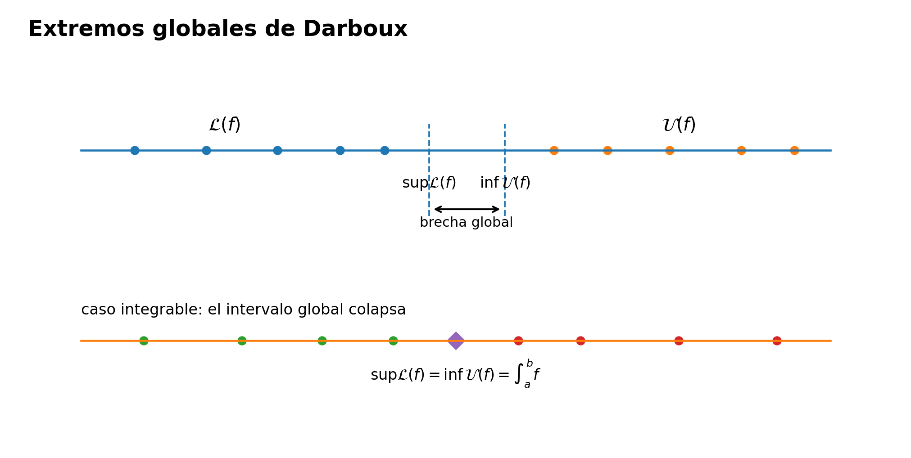
Dos extremos pueden coincidir o permanecer separados
Los casos más simples muestran ambas posibilidades sin introducir aún ninguna definición nueva.
Una función constante. Si
\[ f(x)=c \qquad \text{para todo }x\in[a,b], \]
entonces en toda partición \(P\) los ínfimos y supremos locales son iguales a \(c\). Por tanto,
\[ L(f,P)=U(f,P)=c(b-a). \]
Las dos familias son el mismo conjunto unitario:
\[ \mathcal L(f)=\mathcal U(f)=\{c(b-a)\}. \]
Luego
\[ \underline{\int_a^b} f(x)\,dx = \overline{\int_a^b} f(x)\,dx = c(b-a). \]
Aquí los dos extremos globales coinciden.
El fenómeno opuesto también puede persistir incluso después de considerar todas las particiones.
Ejemplo 14.1 Dos extremos globales separados en cada escala finita. Consideremos la función
\[ d(x)= \begin{cases} 1, & x\in\mathbb Q,\\ 0, & x\notin\mathbb Q, \end{cases} \qquad 0\le x\le1. \]
En Ejemplo 13.15 vimos que todo subintervalo no degenerado contiene racionales e irracionales. Por tanto, para cualquier partición \(P\) de \([0,1]\),
\[ L(d,P)=0, \qquad U(d,P)=1. \]
En consecuencia,
\[ \mathcal L(d)=\{0\}, \qquad \mathcal U(d)=\{1\}, \]
y de Definición 14.1 obtenemos
\[ \boxed{ \underline{\int_0^1} d(x)\,dx=0, \qquad \overline{\int_0^1} d(x)\,dx=1. } \]
Ningún cambio de partición modifica la separación entre ambos extremos.
Este ejemplo muestra por qué la existencia de la integral inferior y de la integral superior no resuelve por sí sola el problema de la integración. La completitud garantiza dos números, pero no garantiza que sean el mismo.
Lo que hemos construido y lo que todavía falta
C14 trabajaba con una partición cada vez:
\[ P \longmapsto [L(f,P),U(f,P)]. \]
C15 ha comenzado considerando todas ellas simultáneamente:
\[ \{L(f,P)\}_P \qquad\text{y}\qquad \{U(f,P)\}_P. \]
La completitud transforma esas dos familias en dos números bien definidos:
\[ \boxed{ \underline{\int_a^b} f \le \overline{\int_a^b} f. } \]
Pero todavía no hemos definido
\[ \int_a^b f(x)\,dx \]
para una función acotada general.
Ese símbolo sin barra inferior ni superior aparecerá solo después de contestar la pregunta que ahora queda aislada con precisión:
\[ \boxed{ \text{¿cuándo coinciden la integral inferior y la integral superior?} } \]
La respuesta será la definición de integrabilidad de Riemann de §14.2.
En esta sección, toda función acotada posee una integral inferior global y una integral superior global.
No hemos dicho todavía que toda función acotada sea integrable, ni hemos definido la integral de Riemann general. La función de Ejemplo 14.1 muestra exactamente por qué esas afirmaciones serían distintas.
Antes de seguir. ¿Por qué la colección \(\mathcal L(f)\) es no vacía? ¿Qué resultado de C14 permite usar una suma superior construida sobre una partición como cota superior de todas las sumas inferiores, incluso de las construidas sobre particiones no comparables? ¿En qué paso exacto entra la completitud de \(\mathbb R\)? ¿Por qué no necesitamos que exista una partición que alcance el supremo de \(\mathcal L(f)\)? ¿Qué información nueva expresa la desigualdad entre los dos extremos globales y qué información falta todavía para disponer de una integral de Riemann?
14.2 Definición de integrabilidad de Riemann
La sección anterior dejó aislada una única obstrucción. Para toda función acotada \(f:[a,b]\to\mathbb R\) existen dos números reales,
\[ \underline{\int_a^b} f(x)\,dx \le \overline{\int_a^b} f(x)\,dx, \]
pero no hay razón automática para que sean iguales. La función de Ejemplo 14.1 muestra que la separación puede persistir aunque consideremos todas las particiones.
La definición de integral de Riemann consiste precisamente en exigir que ese intervalo global se reduzca a un solo punto.
Definición 14.2 Integrabilidad de Riemann e integral de Riemann. Sean \(a<b\) y sea \(f:[a,b]\to\mathbb R\) una función acotada. Diremos que \(f\) es Riemann integrable en \([a,b]\) si
\[ \boxed{ \underline{\int_a^b} f(x)\,dx = \overline{\int_a^b} f(x)\,dx. } \]
Cuando esta igualdad se cumple, llamamos integral de Riemann de \(f\) en \([a,b]\) al valor común y escribimos
\[ \boxed{ \int_a^b f(x)\,dx := \underline{\int_a^b} f(x)\,dx = \overline{\int_a^b} f(x)\,dx. } \]
Denotaremos por \(\mathcal R[a,b]\) la clase de las funciones Riemann integrables en \([a,b]\).
Hay dos partes de la definición que conviene mantener separadas.
Primero, la acotación no es una conclusión de esta formulación: es una hipótesis previa, necesaria para que las sumas de Darboux de C14 y los extremos globales de Definición 14.1 estén definidos como números reales.
Segundo, la palabra integrable designa una propiedad de la función; el símbolo
\[ \int_a^b f(x)\,dx \]
se introduce solo cuando esa propiedad ya ha sido verificada. No estamos asignando por convención un número a toda función acotada.
El valor integral es único
La unicidad no requiere un nuevo teorema. Las integrales inferior y superior globales son números determinados por \(f\) y por \([a,b]\). Si coinciden, su valor común queda determinado de manera única.
En otras palabras, no hay una elección escondida en la notación
\[ \int_a^b f(x)\,dx. \]
No elegimos una partición, ni una sucesión de particiones, ni etiquetas particulares. El número integral aparece únicamente cuando los dos extremos construidos sobre todas las particiones son el mismo.
Esta observación evita una confusión frecuente: una sucesión concreta de aproximaciones puede converger a cierto número y, sin embargo, eso por sí solo no convierte ese número en la integral de Riemann. La definición exige una afirmación global sobre las familias completas de sumas inferiores y superiores.
Toda suma inferior y superior encierra la integral
Si \(f\in\mathcal R[a,b]\), Proposición 14.1 se simplifica inmediatamente. Para toda partición \(P\in\mathcal P[a,b]\),
\[ L(f,P) \le \underline{\int_a^b} f(x)\,dx = \int_a^b f(x)\,dx = \overline{\int_a^b} f(x)\,dx \le U(f,P). \]
Por tanto,
\[ \boxed{ L(f,P) \le \int_a^b f(x)\,dx \le U(f,P) \qquad \text{para toda partición }P. } \]
Y si \(\xi\) es una elección de etiquetas sobre la misma partición, el encierro de C14 da además
\[ L(f,P) \le R(f;P,\xi) \le U(f,P). \]
Obsérvese lo que no se sigue: en general no podemos ordenar directamente una suma etiquetada y la integral,
\[ R(f;P,\xi) \quad\text{y}\quad \int_a^b f. \]
Ambas están encerradas entre los mismos extremos, pero cualquiera de las dos puede quedar por encima de la otra. Lo que importa para la teoría será poder hacer tan estrecho como queramos el intervalo
\[ [L(f,P),U(f,P)]. \]
Ese será exactamente el contenido de §14.3.
Dos decisiones inmediatas: una función integrable y otra que no lo es
Las funciones constantes ya quedaron resueltas en §14.1. Si \(f(x)=c\) en \([a,b]\), entonces
\[ \underline{\int_a^b} f(x)\,dx = \overline{\int_a^b} f(x)\,dx = c(b-a), \]
por lo que \(f\in\mathcal R[a,b]\) y
\[ \int_a^b c\,dx=c(b-a). \]
Por el contrario, para la función racional/irracional \(d\) de Ejemplo 14.1,
\[ \underline{\int_0^1} d(x)\,dx=0, \qquad \overline{\int_0^1} d(x)\,dx=1. \]
Luego
\[ d\notin\mathcal R[0,1]. \]
No hace falta buscar una partición más ingeniosa: la separación ya ha sido calculada después de considerar todas las particiones.
El siguiente ejemplo muestra un tercer comportamiento. Una familia concreta de particiones no define la integral, pero puede servir para certificar que los dos extremos globales tienen que coincidir.
Ejemplo 14.2 La función identidad en \([0,1]\): una familia que atrapa los extremos globales. Sea
\[ f(x)=x, \qquad 0\le x\le1. \]
Para \(n\ge1\) consideremos la partición uniforme
\[ P_n = \left\{ 0,\frac1n,\frac2n,\ldots,\frac{n-1}{n},1 \right\}. \]
En el subintervalo
\[ \left[\frac{k-1}{n},\frac{k}{n}\right] \]
la función identidad tiene ínfimo \((k-1)/n\) y supremo \(k/n\). Como todos los subintervalos tienen longitud \(1/n\),
\[ L(f,P_n) = \frac1n\sum_{k=1}^n\frac{k-1}{n} = \frac{n-1}{2n} = \frac12-\frac1{2n}, \]
y
\[ U(f,P_n) = \frac1n\sum_{k=1}^n\frac{k}{n} = \frac{n+1}{2n} = \frac12+\frac1{2n}. \]
Por Proposición 14.1, para todo \(n\),
\[ \frac12-\frac1{2n} \le \underline{\int_0^1} f(x)\,dx \le \overline{\int_0^1} f(x)\,dx \le \frac12+\frac1{2n}. \]
Mostremos que los dos números centrales deben ser \(1/2\).
Si
\[ \underline{\int_0^1} f(x)\,dx<\frac12, \]
la diferencia
\[ \delta := \frac12- \underline{\int_0^1} f(x)\,dx \]
sería positiva. Eligiendo \(n\) suficientemente grande para que \(1/(2n)<\delta\), obtendríamos
\[ \frac12-\frac1{2n} > \underline{\int_0^1} f(x)\,dx, \]
contradicción. Por tanto,
\[ \frac12 \le \underline{\int_0^1} f(x)\,dx. \]
De manera análoga, si la integral superior fuese mayor que \(1/2\), un \(n\) suficientemente grande produciría
\[ \overline{\int_0^1} f(x)\,dx > \frac12+\frac1{2n}, \]
contradiciendo el encierro anterior. Luego
\[ \overline{\int_0^1} f(x)\,dx \le \frac12. \]
Como siempre tenemos
\[ \underline{\int_0^1} f(x)\,dx \le \overline{\int_0^1} f(x)\,dx, \]
concluimos
\[ \boxed{ \underline{\int_0^1} f(x)\,dx = \overline{\int_0^1} f(x)\,dx = \frac12. } \]
Así, \(f\in\mathcal R[0,1]\) y
\[ \boxed{ \int_0^1 x\,dx=\frac12. } \]
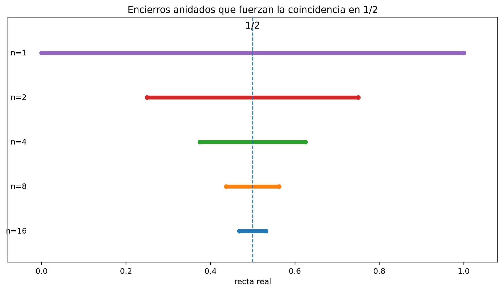
El ejemplo es importante por su lógica. No hemos dicho «las sumas de esta familia convergen, luego la función es integrable». Lo que hicimos fue usar, para cada \(n\), el encierro global de Proposición 14.1. Las cotas producidas por \(P_n\) obligaron a las integrales inferior y superior —que ya estaban definidas sobre todas las particiones— a caer en intervalos cada vez más estrechos.
Ese mecanismo sugiere una caracterización mucho más útil que la igualdad abstracta de dos extremos:
\[ \text{poder encontrar particiones cuya brecha} \quad U(f,P)-L(f,P) \quad \text{sea arbitrariamente pequeña}. \]
Pero «arbitrariamente pequeña» contiene un cuantificador que todavía debemos formular y demostrar correctamente. No basta con exhibir una sola partición buena, ni con observar numéricamente que varias brechas parecen decrecer.
En §14.2, la integrabilidad de Riemann significa exclusivamente
\[ \underline{\int_a^b}f = \overline{\int_a^b}f. \]
La condición
\[ \forall\varepsilon>0\ \exists P: U(f,P)-L(f,P)<\varepsilon \]
aún no ha sido declarada equivalente. Esa equivalencia será el teorema de §14.3.
Antes de seguir. ¿Por qué la definición exige acotación antes de hablar de integrabilidad? ¿Qué diferencia lógica hay entre «la función es integrable» y «hemos calculado su integral»? ¿Por qué Proposición 14.1 implica que toda partición encierra el valor integral cuando este existe? ¿Por qué la convergencia de una familia particular de sumas no puede sustituir por sí sola la definición global? En Ejemplo 14.2, ¿qué paso adicional convierte a las particiones uniformes en un certificado de integrabilidad y no solo en una colección de aproximaciones plausibles?
14.3 El criterio de Darboux: brechas arbitrariamente pequeñas
La definición de §14.2 es conceptualmente limpia, pero no siempre es la forma más cómoda de demostrar integrabilidad. Para usarla directamente habría que identificar dos extremos globales,
\[ \underline{\int_a^b}f \qquad\text{y}\qquad \overline{\int_a^b}f, \]
y después probar que coinciden.
El ejemplo Ejemplo 14.2 sugiere una estrategia más local. No calculamos primero los dos extremos: construimos particiones cuyos encierros
\[ [L(f,P),U(f,P)] \]
son cada vez más estrechos. Si podemos hacer su anchura menor que cualquier número positivo prefijado, entonces no queda espacio para que las integrales inferior y superior permanezcan separadas.
La palabra decisiva es cualquier.
Del intervalo global a una partición suficientemente buena
Recordemos que, por Proposición 14.1, para toda partición \(P\),
\[ L(f,P) \le \underline{\int_a^b}f \le \overline{\int_a^b}f \le U(f,P). \]
Por consiguiente,
\[ 0 \le \overline{\int_a^b}f- \underline{\int_a^b}f \le U(f,P)-L(f,P). \]
Toda brecha de una partición domina la separación global. La pregunta es si la recíproca lógica también puede obtenerse: cuando la separación global es cero, ¿podemos encontrar una sola partición cuya brecha sea tan pequeña como queramos?
Sí, pero hace falta usar correctamente las propiedades de supremo e ínfimo y después combinar dos particiones distintas.
Teorema 14.1 Teorema (criterio de Darboux). Sean \(a<b\) y sea \(f:[a,b]\to\mathbb R\) acotada. Entonces son equivalentes:
- \(f\) es Riemann integrable en \([a,b]\);
- para todo \(\varepsilon>0\) existe una partición \(P\in\mathcal P[a,b]\) tal que \[ \boxed{ U(f,P)-L(f,P)<\varepsilon. } \]
Demostración. Supongamos primero que \(f\) es Riemann integrable y escribamos
\[ I:=\int_a^b f(x)\,dx. \]
Entonces, por Definición 14.2,
\[ I = \sup_{P\in\mathcal P[a,b]}L(f,P) = \inf_{P\in\mathcal P[a,b]}U(f,P). \]
Sea \(\varepsilon>0\).
Como \(I\) es el supremo de todas las sumas inferiores, \(I-\varepsilon/2\) no puede ser una cota superior de \(\mathcal L(f)\). Por tanto existe una partición \(P_-\) tal que
\[ L(f,P_-) > I-\frac{\varepsilon}{2}. \]
Análogamente, como \(I\) es el ínfimo de todas las sumas superiores, \(I+\varepsilon/2\) no puede ser una cota inferior de \(\mathcal U(f)\). Existe entonces una partición \(P_+\) con
\[ U(f,P_+) < I+\frac{\varepsilon}{2}. \]
No hay razón para que \(P_-\) y \(P_+\) sean la misma partición. Tomemos su refinamiento común
\[ P:=P_-\vee P_+. \]
Por la monotonía bajo refinamiento de Proposición 13.6,
\[ L(f,P) \ge L(f,P_-) > I-\frac{\varepsilon}{2}, \]
y
\[ U(f,P) \le U(f,P_+) < I+\frac{\varepsilon}{2}. \]
Restando,
\[ U(f,P)-L(f,P) < \left(I+\frac{\varepsilon}{2}\right) - \left(I-\frac{\varepsilon}{2}\right) = \varepsilon. \]
Esto demuestra la segunda condición.
Recíprocamente, supongamos que para todo \(\varepsilon>0\) existe una partición \(P\) con
\[ U(f,P)-L(f,P)<\varepsilon. \]
Escribamos
\[ \underline I := \underline{\int_a^b}f(x)\,dx, \qquad \overline I := \overline{\int_a^b}f(x)\,dx. \]
Por Proposición 14.1, para cualquier partición \(P\),
\[ L(f,P) \le \underline I \le \overline I \le U(f,P). \]
Luego
\[ 0 \le \overline I-\underline I \le U(f,P)-L(f,P). \]
Dado \(\varepsilon>0\), elegimos una partición con brecha menor que \(\varepsilon\) y obtenemos
\[ 0 \le \overline I-\underline I < \varepsilon. \]
Si \(\overline I-\underline I\) fuese positivo, podríamos tomar
\[ \varepsilon = \frac{\overline I-\underline I}{2}>0, \]
lo que daría la contradicción
\[ \overline I-\underline I < \frac{\overline I-\underline I}{2}. \]
Por tanto,
\[ \underline I=\overline I. \]
Según Definición 14.2, \(f\) es Riemann integrable. \(\square\)
Qué hace realmente el refinamiento común
La primera mitad de la prueba contiene un detalle fácil de ocultar si se escribe demasiado rápido.
De la igualdad
\[ \sup_P L(f,P)=\inf_P U(f,P)=I \]
obtenemos inicialmente dos datos distintos:
- una partición \(P_-\) cuya suma inferior está cerca de \(I\) por abajo;
- una partición \(P_+\) cuya suma superior está cerca de \(I\) por arriba.
Nada garantiza que una sola de ellas satisfaga simultáneamente ambas aproximaciones. El refinamiento común resuelve exactamente ese problema:
\[ P_-\vee P_+ \]
mejora la suma inferior de \(P_-\) y, al mismo tiempo, mejora la suma superior de \(P_+\).
Ese paso convierte dos aproximaciones unilaterales en un único encierro estrecho.
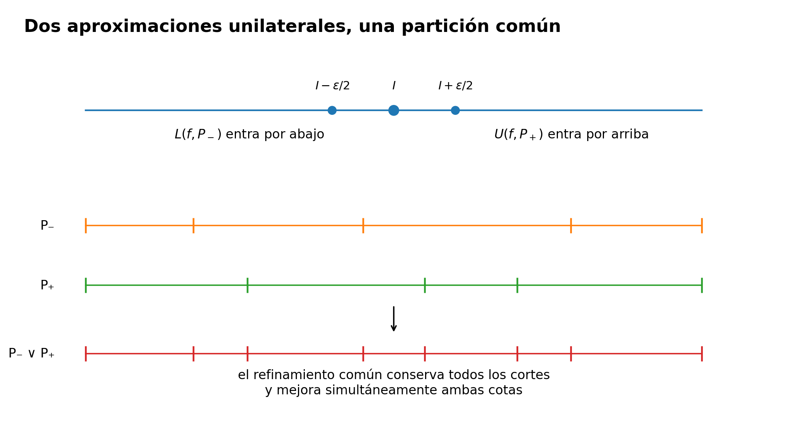
El orden de los cuantificadores importa
El criterio no dice que exista una partición con una brecha «pequeña» en algún sentido informal. Dice
\[ \boxed{ \forall\varepsilon>0\ \exists P\in\mathcal P[a,b] \text{ tal que } U(f,P)-L(f,P)<\varepsilon. } \]
Primero se fija la precisión exigida; después puede elegirse una partición que dependa de esa precisión.
Una sola brecha positiva, aunque numéricamente pequeña, no basta. Por ejemplo, para un número fijo \(c>0\) consideremos
\[ d_c(x) = \begin{cases} c, & x\in\mathbb Q,\\ 0, & x\notin\mathbb Q, \end{cases} \qquad 0\le x\le1. \]
En toda partición \(P\),
\[ L(d_c,P)=0, \qquad U(d_c,P)=c, \]
así que la brecha es siempre \(c\). Si \(c=10^{-6}\), por ejemplo, disponemos de una brecha muy pequeña en escala decimal; sin embargo, al pedir
\[ \varepsilon=\frac{c}{2}, \]
ninguna partición satisface el criterio. La función sigue sin ser integrable.
Por eso «pequeña» no es una noción matemática suficiente aquí. Lo relevante es arbitrariamente pequeña.
Una sucesión de brechas sí puede certificar el criterio
El teorema permite una reformulación útil. Si podemos construir particiones \(P_n\) tales que
\[ U(f,P_n)-L(f,P_n)\longrightarrow0, \]
entonces, dado \(\varepsilon>0\), para \(n\) suficientemente grande la brecha será menor que \(\varepsilon\). Por Teorema 14.1, \(f\) es integrable.
La conversa también es cierta: si \(f\) es integrable, para cada \(n\ge1\) el criterio permite elegir una partición \(P_n\) con
\[ U(f,P_n)-L(f,P_n)<\frac1n. \]
Así,
\[ f\in\mathcal R[a,b] \quad\Longleftrightarrow\quad \text{existe una sucesión de particiones }(P_n) \text{ con } U(f,P_n)-L(f,P_n)\to0. \]
La afirmación es correcta porque controla la brecha completa de Darboux. Es muy distinta de observar que una sucesión particular de sumas etiquetadas converge: ese último hecho, por sí solo, no controla todas las elecciones posibles y no es todavía un criterio de integrabilidad.
El criterio puede probar existencia sin calcular el valor
Ejemplo 14.3 Integrabilidad de \(x^2\) sin calcular todavía su integral. Sea
\[ f(x)=x^2, \qquad 0\le x\le1. \]
En Ejemplo 13.14 se calculó, para la partición uniforme
\[ P_n = \left\{0,\frac1n,\ldots,1\right\}, \]
la brecha exacta
\[ U(f,P_n)-L(f,P_n)=\frac1n. \]
Sea \(\varepsilon>0\). Por la propiedad arquimediana podemos elegir \(n\) con
\[ n>\frac1\varepsilon. \]
Entonces
\[ U(f,P_n)-L(f,P_n) = \frac1n < \varepsilon. \]
Por Teorema 14.1,
\[ \boxed{ f\in\mathcal R[0,1]. } \]
El argumento demuestra existencia de la integral, pero no ha calculado todavía su valor. Esa distinción será importante repetidas veces: probar integrabilidad y evaluar la integral son tareas diferentes.
Refinar una partición buena conserva la certificación
Si una partición \(P\) satisface
\[ U(f,P)-L(f,P)<\varepsilon \]
y \(Q\) refina a \(P\), entonces Proposición 13.8 implica
\[ U(f,Q)-L(f,Q) \le U(f,P)-L(f,P) < \varepsilon. \]
Por tanto, una vez encontrada una partición suficientemente buena, todo refinamiento suyo sigue siendo suficientemente bueno para la misma tolerancia.
Esto no debe confundirse con afirmar que toda partición de malla menor es buena. C14 ya mostró que «malla menor» y «refinamiento» son relaciones diferentes. El criterio de Darboux habla de existencia de particiones con brecha pequeña; el criterio uniforme por malla, mucho más fuerte en su forma aparente, será objeto de §14.4 al introducir la equivalencia con sumas etiquetadas.
El criterio de Darboux es un teorema equivalente a la definición de §14.2. No reemplaza retroactivamente la definición primaria de CPM.
La ruta lógica sigue siendo
\[ \text{extremos globales} \longrightarrow \text{definición por coincidencia} \longrightarrow \text{criterio }U-L<\varepsilon. \]
Antes de seguir. En la primera dirección de Teorema 14.1, ¿por qué aparecen inicialmente dos particiones diferentes? ¿Qué propiedad del refinamiento común permite fundirlas en una sola? ¿Por qué una brecha fija de \(10^{-6}\) no basta para probar integrabilidad? ¿Qué diferencia hay entre una sucesión de brechas de Darboux que tiende a cero y una sucesión particular de sumas etiquetadas que converge? En Ejemplo 14.3, ¿qué hemos demostrado sobre \(\int_0^1x^2\,dx\) y qué sigue todavía sin determinar?
14.4 Sumas etiquetadas: equivalencia con la definición por malla
Hasta ahora la teoría de C15 ha utilizado como objeto primario las sumas inferior y superior. La definición de integrabilidad compara sus extremos globales y Teorema 14.1 permite reconocer la integrabilidad buscando particiones cuya brecha de Darboux sea arbitrariamente pequeña.
Pero las sumas etiquetadas de C14 plantean una formulación que se parece más a la idea informal de «sumar rectángulos cada vez más finos». Si
\[ (P,\xi) \]
es una partición etiquetada, recordemos que
\[ R(f;P,\xi) = \sum_{k=1}^n f(\xi_k)\Delta x_k. \]
La pregunta correcta no es si alguna sucesión especialmente escogida de estas sumas converge. Debemos preguntar si, una vez que la malla es suficientemente pequeña, todas las sumas etiquetadas quedan cerca del mismo número, sin importar cómo se hayan distribuido los cortes ni cómo se hayan elegido las etiquetas.
El orden de los cuantificadores será, por tanto,
\[ \boxed{ \forall\varepsilon>0\ \exists\delta>0\ \forall(P,\xi): \|P\|<\delta \Longrightarrow |R(f;P,\xi)-I|<\varepsilon. } \]
Esta afirmación es considerablemente más fuerte que la convergencia de una familia particular. Antes de demostrar que equivale a la integrabilidad de Darboux necesitamos resolver una dificultad: una partición de malla pequeña no tiene por qué refinar la partición buena proporcionada por Teorema 14.1.
Insertar finitísimos cortes solo puede afectar a pocas piezas
Sea \(Q\) una partición fija. Una partición muy fina \(P\) puede omitir todos los cortes interiores de \(Q\). Sin embargo, cada corte omitido puede caer en el interior de a lo sumo una pieza de \(P\). Si \(f\) está acotada, la contribución total de esas piezas problemáticas puede controlarse mediante la malla.
Lema 14.1 Lema (transferencia de una partición de Darboux a particiones de malla pequeña). Sea \(f:[a,b]\to\mathbb R\) acotada y sea \(B>0\) tal que
\[ |f(x)|\le B \qquad (x\in[a,b]). \]
Fijemos una partición
\[ Q=\{q_0,q_1,\ldots,q_m\}, \qquad q_0=a<q_1<\cdots<q_m=b, \]
y sea \(r=m-1\) el número de sus puntos interiores. Entonces, para toda partición \(P\) de \([a,b]\),
\[ \boxed{ U(f,P)-L(f,P) \le U(f,Q)-L(f,Q) +2Br\,\|P\|. } \]
Demostración. Formemos el refinamiento común
\[ S:=P\vee Q. \]
Como \(S\) refina a \(Q\), Proposición 13.8 da
\[ U(f,S)-L(f,S) \le U(f,Q)-L(f,Q). \]
Comparemos ahora las brechas de \(P\) y \(S\). Un subintervalo de \(P\) que no contenga en su interior ningún punto \(q_j\) de \(Q\) no se divide al pasar de \(P\) a \(S\); por tanto, su contribución a la brecha permanece exactamente igual.
Solo pueden cambiar los subintervalos de \(P\) que contienen algún punto interior de \(Q\). Llamémoslos subintervalos afectados. Hay a lo sumo \(r\) de ellos: distintos puntos de \(Q\) pueden incluso caer en una misma pieza de \(P\), pero cada pieza afectada contiene por lo menos uno de los \(r\) cortes interiores.
Si \(I=[x_{k-1},x_k]\) es una pieza afectada, la acotación \(|f|\le B\) implica
\[ \sup_I f-\inf_I f\le 2B. \]
Su contribución original a la brecha de \(P\) es, por tanto, a lo sumo
\[ 2B\,\Delta x_k \le 2B\,\|P\|. \]
La suma de las contribuciones originales de todas las piezas afectadas es a lo sumo
\[ 2Br\,\|P\|. \]
En las piezas no afectadas las contribuciones de \(P\) y \(S\) coinciden, mientras que las nuevas contribuciones creadas dentro de las piezas afectadas son no negativas. En consecuencia,
\[ U(f,P)-L(f,P) \le U(f,S)-L(f,S) +2Br\,\|P\|. \]
Combinando esta desigualdad con la cota obtenida desde \(Q\) llegamos a
\[ U(f,P)-L(f,P) \le U(f,Q)-L(f,Q) +2Br\,\|P\|. \]
Esto prueba el lema. \(\square\)
La estimación explica la diferencia entre refinamiento y malla pequeña. Si \(P\) refinara a \(Q\), el término adicional sería innecesario. Cuando no la refina, la única pérdida posible está concentrada en las pocas piezas que atraviesan los cortes fijos de \(Q\); al hacer pequeña la malla, la longitud total de esas piezas se hace pequeña.
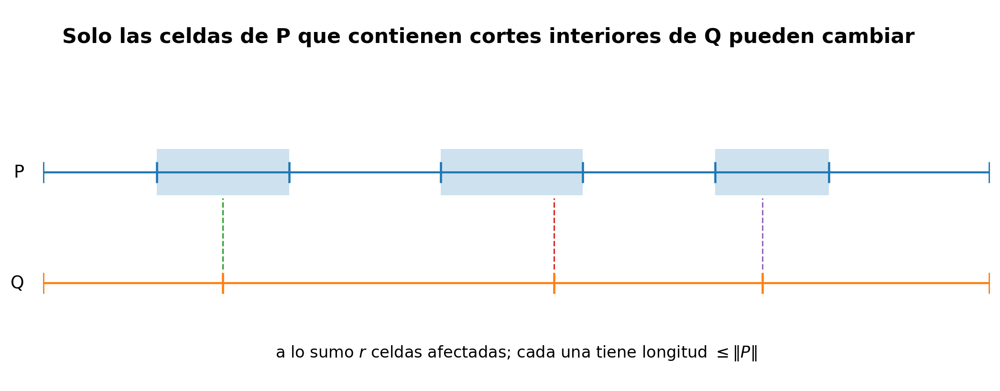
La formulación uniforme mediante sumas etiquetadas
Ya podemos demostrar la equivalencia completa.
Teorema 14.2 Teorema (equivalencia entre Darboux y sumas etiquetadas de malla pequeña). Sean \(a<b\), sea \(f:[a,b]\to\mathbb R\) acotada y sea \(I\in\mathbb R\). Son equivalentes:
- \(f\) es Riemann integrable en \([a,b]\) y \[ I=\int_a^b f(x)\,dx; \]
- para todo \(\varepsilon>0\) existe \(\delta>0\) tal que, para toda partición etiquetada \((P,\xi)\) de \([a,b]\), \[ \|P\|<\delta \quad\Longrightarrow\quad \boxed{ |R(f;P,\xi)-I|<\varepsilon. } \]
Así, el valor integral queda caracterizado por un control uniforme de todas las sumas etiquetadas cuando la malla es suficientemente pequeña.
Demostración. Demostraremos las dos implicaciones por separado.
(1 \(\Rightarrow\) 2). Supongamos que \(f\) es integrable y
\[ I=\int_a^b f(x)\,dx. \]
Como \(f\) es acotada, existe \(B>0\) tal que \(|f(x)|\le B\) en todo \([a,b]\).
Sea \(\varepsilon>0\). Por el criterio de Darboux Teorema 14.1 existe una partición fija
\[ Q=\{q_0,\ldots,q_m\} \]
tal que
\[ U(f,Q)-L(f,Q)<\frac{\varepsilon}{2}. \]
Sea \(r=m-1\) el número de cortes interiores de \(Q\) y definamos
\[ \delta := \frac{\varepsilon} {4B\max\{1,r\}}. \]
Tomemos ahora cualquier partición etiquetada \((P,\xi)\) con
\[ \|P\|<\delta. \]
Por Lema 14.1,
\[ \begin{aligned} U(f,P)-L(f,P) &\le U(f,Q)-L(f,Q)+2Br\,\|P\|\\ &< \frac{\varepsilon}{2} +2Br\,\delta\\ &\le \frac{\varepsilon}{2}+\frac{\varepsilon}{2} =\varepsilon. \end{aligned} \]
Como \(f\) es integrable, §14.2 nos da
\[ L(f,P)\le I\le U(f,P), \]
y Proposición 13.7 da
\[ L(f,P)\le R(f;P,\xi)\le U(f,P). \]
Dos números contenidos en el mismo intervalo de longitud \(U(f,P)-L(f,P)\) difieren en valor absoluto a lo sumo esa longitud. Por tanto,
\[ |R(f;P,\xi)-I| \le U(f,P)-L(f,P) <\varepsilon. \]
La elección de \(\delta\) dependió de \(\varepsilon\), de \(f\) y de la partición auxiliar fija \(Q\), pero no dependió de la partición etiquetada \((P,\xi)\) que apareció después. Queda demostrada la uniformidad exigida.
(2 \(\Rightarrow\) 1). Supongamos ahora que existe \(I\in\mathbb R\) con la propiedad uniforme indicada. Queremos recuperar el criterio de Darboux.
Sea \(\varepsilon>0\). Aplicando la hipótesis con tolerancia \(\varepsilon/4\), existe \(\delta>0\) tal que
\[ \|P\|<\delta \quad\Longrightarrow\quad |R(f;P,\xi)-I|<\frac{\varepsilon}{4} \]
para toda elección de etiquetas \(\xi\).
Elegimos una partición \(P=\{x_0,\ldots,x_n\}\) con \(\|P\|<\delta\); por ejemplo, una partición uniforme con número de piezas suficientemente grande. Para cada subintervalo
\[ I_k=[x_{k-1},x_k] \]
escribamos
\[ m_k:=\inf_{I_k}f, \qquad M_k:=\sup_{I_k}f. \]
Los extremos \(m_k\) y \(M_k\) no tienen por qué alcanzarse. Sin embargo, por la definición de ínfimo y supremo, dado cualquier \(\eta>0\) podemos escoger etiquetas
\[ \xi_k^-\in I_k, \qquad \xi_k^+\in I_k \]
tales que
\[ f(\xi_k^-)<m_k+\eta, \qquad f(\xi_k^+)>M_k-\eta. \]
Tomemos
\[ \eta:=\frac{\varepsilon}{4(b-a)}. \]
Las correspondientes sumas etiquetadas satisfacen
\[ 0 \le R(f;P,\xi^-)-L(f,P) < \eta\sum_{k=1}^n\Delta x_k = \frac{\varepsilon}{4}, \]
y
\[ 0 \le U(f,P)-R(f;P,\xi^+) < \frac{\varepsilon}{4}. \]
Como \(\|P\|<\delta\), la hipótesis uniforme también proporciona
\[ |R(f;P,\xi^-)-I|<\frac{\varepsilon}{4}, \qquad |R(f;P,\xi^+)-I|<\frac{\varepsilon}{4}. \]
Por tanto,
\[ \begin{aligned} U(f,P)-L(f,P) ={}& \bigl(U(f,P)-R(f;P,\xi^+)\bigr)\\ &+\bigl(R(f;P,\xi^+)-I\bigr)\\ &+\bigl(I-R(f;P,\xi^-)\bigr)\\ &+\bigl(R(f;P,\xi^-)-L(f,P)\bigr)\\ <{}&\varepsilon. \end{aligned} \]
Así, para todo \(\varepsilon>0\) existe una partición con brecha menor que \(\varepsilon\). Por Teorema 14.1, \(f\) es Riemann integrable.
Sea
\[ J:=\int_a^b f(x)\,dx. \]
Falta demostrar que el número \(I\) de la hipótesis es precisamente \(J\). Ya probada la primera implicación, para toda tolerancia \(\rho>0\) existe \(\delta_1>0\) tal que todas las sumas etiquetadas con malla menor que \(\delta_1\) satisfacen
\[ |R(f;P,\xi)-J|<\frac{\rho}{2}. \]
La hipótesis original proporciona otro \(\delta_2>0\) para el cual
\[ |R(f;P,\xi)-I|<\frac{\rho}{2}. \]
Elegimos una partición etiquetada con malla menor que \(\min\{\delta_1,\delta_2\}\). Entonces
\[ |I-J| \le |I-R(f;P,\xi)| + |R(f;P,\xi)-J| <\rho. \]
Como esto vale para todo \(\rho>0\), necesariamente \(I=J\). Queda demostrada la equivalencia. \(\square\)
El teorema cuantifica sobre todas las etiquetas
La segunda condición de Teorema 14.2 puede leerse como una afirmación de independencia progresiva:
\[ \boxed{ \text{cuando la malla es suficientemente pequeña,} \quad \text{ni los cortes ni las etiquetas pueden cambiar mucho la suma.} } \]
No significa que todas las sumas sean iguales. Significa que, dada una tolerancia, existe una escala de malla por debajo de la cual todas caen dentro del mismo intervalo de radio \(\varepsilon\) alrededor de \(I\).
Esto permite distinguir tres afirmaciones:
- existe una sucesión particular de sumas etiquetadas que converge a \(I\);
- para cada partición de cierta familia elegimos etiquetas especiales y obtenemos sumas cercanas a \(I\);
- existe \(\delta>0\) tal que toda partición etiquetada de malla menor que \(\delta\) produce una suma cercana a \(I\).
Solo la tercera es la condición equivalente del teorema. Las dos primeras pueden ser verdaderas sin controlar las demás elecciones.
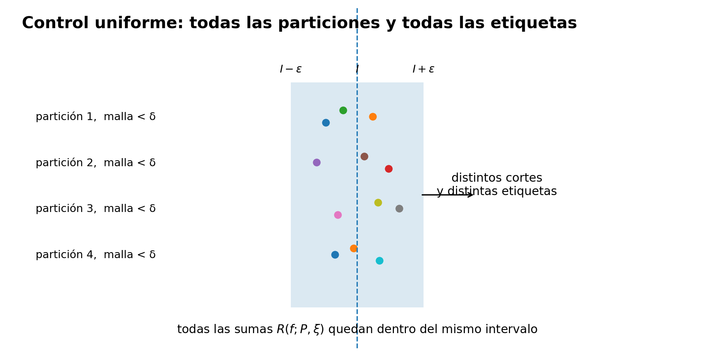
El supremo y el ínfimo no necesitan ser etiquetas
La conversa del teorema también explica por qué C14 insistió en distinguir supremum de máximo. Para reconstruir una brecha de Darboux desde sumas etiquetadas no necesitamos que exista una etiqueta donde \(f\) alcance exactamente \(M_k\) o \(m_k\).
Basta la propiedad característica de supremo e ínfimo: podemos escoger valores de la función tan próximos como queramos a esos extremos. Como la partición tiene finitísimas piezas, hacemos esa elección en cada una y los errores se suman de manera controlada.
Por eso las desigualdades
\[ f(\xi_k^+)>M_k-\eta, \qquad f(\xi_k^-)<m_k+\eta \]
son suficientes. Exigir máximos y mínimos locales habría introducido una hipótesis de continuidad que la teoría general no necesita.
Un control explícito para \(x^2\)
Ejemplo 14.4 Todas las sumas etiquetadas de \(x^2\) son cercanas cuando la malla es pequeña. Sea
\[ f(x)=x^2, \qquad 0\le x\le1. \]
En Ejemplo 14.3 ya demostramos que \(f\) es Riemann integrable. Sea
\[ I:=\int_0^1x^2\,dx, \]
sin calcular todavía el valor de \(I\).
Tomemos una partición arbitraria
\[ P=\{0=x_0<x_1<\cdots<x_n=1\}. \]
Como \(x^2\) es creciente en \([0,1]\), en \([x_{k-1},x_k]\) tenemos
\[ M_k-m_k =x_k^2-x_{k-1}^2 =(x_k+x_{k-1})\Delta x_k \le 2\Delta x_k. \]
Por la identidad de la brecha de Proposición 13.8,
\[ \begin{aligned} U(f,P)-L(f,P) &=\sum_{k=1}^n(M_k-m_k)\Delta x_k\\ &\le 2\sum_{k=1}^n(\Delta x_k)^2\\ &\le 2\|P\|\sum_{k=1}^n\Delta x_k\\ &=2\|P\|. \end{aligned} \]
Para cualquier elección de etiquetas \(\xi\), tanto \(R(f;P,\xi)\) como \(I\) están entre \(L(f,P)\) y \(U(f,P)\). Por tanto,
\[ \boxed{ |R(f;P,\xi)-I| \le 2\|P\|. } \]
Dado \(\varepsilon>0\), basta exigir
\[ \|P\|<\frac{\varepsilon}{2} \]
para obtener
\[ |R(f;P,\xi)-I|<\varepsilon \]
para todas las etiquetas. El cálculo no ha utilizado una partición uniforme ni una regla especial para escoger \(\xi_k\).
El ejemplo muestra una ventaja adicional de la formulación por malla: cuando logramos una estimación explícita, podemos producir directamente un radio \(\delta\) que controla todas las sumas etiquetadas.
Si alguien exhibe únicamente particiones etiquetadas \((P_n,\xi^{(n)})\) tales que
\[ \|P_n\|\to0 \qquad\text{y}\qquad R(f;P_n,\xi^{(n)})\to I, \]
ha demostrado el comportamiento de esa familia.
Para aplicar Teorema 14.2 debe probar algo más fuerte: que, dado \(\varepsilon>0\), existe una sola escala \(\delta\) que funciona simultáneamente para todas las particiones y todas las etiquetas con malla menor que \(\delta\).
La equivalencia entre Darboux y sumas etiquetadas queda así cerrada. La definición primaria de CPM sigue siendo Definición 14.2; Teorema 14.2 demuestra que la formulación clásica mediante sumas de Riemann suficientemente finas selecciona exactamente las mismas funciones y el mismo valor integral.
Antes de seguir. ¿Por qué una partición de malla pequeña no tiene por qué refinar la partición buena obtenida por Teorema 14.1? ¿Qué subintervalos pueden cambiar al insertar los cortes de esa partición fija? ¿Dónde utiliza Lema 14.1 la acotación de \(f\)? En la conversa de Teorema 14.2, ¿por qué escogemos etiquetas que solo se aproximan al supremo y al ínfimo en vez de exigir que los alcancen? ¿Qué diferencia lógica hay entre una sucesión concreta de sumas convergentes y el cuantificador uniforme sobre todas las particiones etiquetadas de malla suficientemente pequeña?
14.5 Compatibilidad con la integral elemental y cambios finitos
La integral elemental de C14 y la integral de Riemann de C15 se han construido por caminos distintos. Para una función escalonada, Definición 13.3 suma exactamente altura por anchura sobre una partición representante. Para una función acotada general, Definición 14.2 compara los extremos globales de todas las sumas inferiores y superiores.
Que ambas construcciones utilicen el mismo símbolo no autoriza todavía a identificarlas. Debemos demostrar dos cosas:
- toda función escalonada es Riemann integrable;
- cuando lo es, su integral de Riemann coincide exactamente con la integral elemental ya definida en C14.
Después podremos ampliar una propiedad que en C14 solo conocíamos dentro de la clase de escalonadas: cambiar finitísimos valores de una función integrable no altera ni su integrabilidad ni el valor de su integral.
Los puntos de corte son la única posible fuente de brecha
Sea \(s:[a,b]\to\mathbb R\) una función escalonada y sea
\[ Q=\{q_0,q_1,\ldots,q_m\}, \qquad a=q_0<q_1<\cdots<q_m=b, \]
una partición que la representa. Existen alturas \(c_1,\ldots,c_m\) tales que
\[ s(x)=c_j \qquad \text{si }x\in(q_{j-1},q_j). \]
Dentro de cada uno de esos intervalos abiertos la oscilación de \(s\) es cero. La única dificultad procede de los finitísimos puntos
\[ q_0,q_1,\ldots,q_m, \]
donde la definición de función escalonada permite valores excepcionales.
Como \(s\) es acotada, fijemos \(B>0\) con
\[ |s(x)|\le B \qquad(x\in[a,b]). \]
Sea además
\[ d:=\min_{1\le j\le m}(q_j-q_{j-1})>0. \]
Dado \(\rho\) con
\[ 0<\rho<\frac d2, \]
refinemos \(Q\) insertando, dentro de cada intervalo \((q_{j-1},q_j)\), los dos puntos
\[ q_{j-1}+\rho, \qquad q_j-\rho. \]
Si \(m=1\) la construcción se interpreta del mismo modo; la condición \(2\rho<d\) garantiza que los puntos quedan en el orden correcto. Denotemos por \(P_\rho\) la partición resultante.
En cada intervalo central
\[ [q_{j-1}+\rho,q_j-\rho] \]
la función vale constantemente \(c_j\), incluso en sus extremos, porque todos esos puntos pertenecen al intervalo abierto \((q_{j-1},q_j)\). Su contribución a la brecha es, por tanto, cero.
Solo quedan las dos franjas de anchura \(\rho\) adyacentes a cada extremo de cada escalón. La suma de sus longitudes es
\[ 2m\rho. \]
En cualquiera de esas piezas la oscilación es a lo sumo \(2B\). Por la identidad de la brecha de Proposición 13.8,
\[ \boxed{ U(s,P_\rho)-L(s,P_\rho) \le 4Bm\rho. } \]
Así, los valores excepcionales de los cortes pueden influir en una partición concreta, pero su influencia queda confinada a una longitud total que podemos hacer arbitrariamente pequeña.
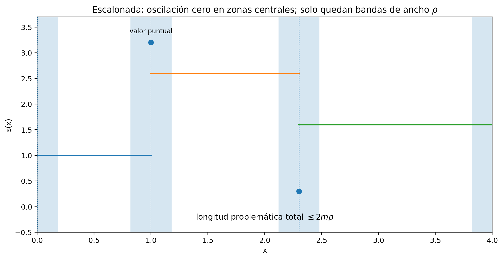
Las dos integrales coinciden
Teorema 14.3 Teorema (compatibilidad entre la integral elemental y la integral de Riemann). Sean \(a<b\) y sea \(s:[a,b]\to\mathbb R\) una función escalonada. Entonces
\[ \boxed{s\in\mathcal R[a,b].} \]
Además, la integral de Riemann de \(s\) coincide con la integral elemental definida en Definición 13.3:
\[ \boxed{ \int_a^b s(x)\,dx\Big|_{\mathrm{Riemann}} = \int_a^b s(x)\,dx\Big|_{\mathrm{elemental}}. } \]
Por tanto, desde este punto podremos usar el símbolo \(\int_a^b s(x)\,dx\) sin distinguir ambas construcciones cuando \(s\) sea escalonada.
Demostración. Sea \(Q=\{q_0,\ldots,q_m\}\) una partición representante de \(s\) y elijamos \(B>0\) y \(d>0\) como arriba.
Primero probemos la integrabilidad. Sea \(\varepsilon>0\). Elegimos
\[ 0<\rho< \min\left\{ \frac d2, \frac{\varepsilon}{4Bm} \right\}. \]
Para la partición \(P_\rho\) recién construida,
\[ U(s,P_\rho)-L(s,P_\rho) \le 4Bm\rho < \varepsilon. \]
Por el criterio de Darboux Teorema 14.1,
\[ s\in\mathcal R[a,b]. \]
Escribamos ahora
\[ I_R:=\int_a^b s(x)\,dx \]
para la integral de Riemann y
\[ I_E:=\int_a^b s(x)\,dx\Big|_{\mathrm{elemental}} \]
para el número definido en C14.
Fijemos una partición arbitraria \(P\) de \([a,b]\). En §13.6 se construyeron las funciones escalonadas auxiliares \(\ell_{s,P}\) y \(u_{s,P}\), que satisfacen
\[ \ell_{s,P}\le s\le u_{s,P} \]
punto a punto y cuyas integrales elementales son
\[ \int_a^b\ell_{s,P}=L(s,P), \qquad \int_a^b u_{s,P}=U(s,P). \]
Como las tres funciones son escalonadas, la monotonía de la integral elemental demostrada en Proposición 13.3 da
\[ L(s,P) \le I_E \le U(s,P). \]
Esto vale para toda partición \(P\). Por consiguiente, \(I_E\) es una cota superior de todas las sumas inferiores y una cota inferior de todas las sumas superiores. De Definición 14.1 obtenemos
\[ \underline{\int_a^b}s \le I_E \le \overline{\int_a^b}s. \]
Pero ya demostramos que \(s\) es integrable, de modo que ambos extremos globales coinciden con \(I_R\). Por tanto,
\[ I_R\le I_E\le I_R, \]
y necesariamente
\[ I_E=I_R. \]
Queda demostrada la compatibilidad. \(\square\)
El teorema cierra una deuda lógica de C14. Allí el adjetivo «elemental» delimitaba una operación definida solo para escalonadas. Ahora sabemos que esa operación no compite con la integral general: es exactamente su restricción a la clase de funciones escalonadas.
Por ejemplo, la función de Ejemplo 13.5 tenía integral elemental \(7\). Desde ahora podemos afirmar, sin introducir un segundo valor,
\[ \int_0^4 s(x)\,dx=7 \]
en el sentido general de Riemann.
Cambiar finitísimos valores: ahora para cualquier función integrable
En Corolario 13.1 probamos que dos funciones escalonadas que difieren solo en un conjunto finito tienen la misma integral elemental. La equivalencia por sumas etiquetadas de §14.4 permite eliminar ahora la hipótesis de que ambas sean escalonadas.
Corolario 14.1 Corolario (invariancia de la integral de Riemann ante modificaciones finitas). Sean \(f,g:[a,b]\to\mathbb R\) funciones que coinciden salvo, a lo sumo, en un conjunto finito
\[ F\subseteq[a,b]. \]
Entonces
\[ \boxed{ f\in\mathcal R[a,b] \iff g\in\mathcal R[a,b]. } \]
Cuando estas condiciones se cumplen,
\[ \boxed{ \int_a^b f(x)\,dx = \int_a^b g(x)\,dx. } \]
Demostración. Por simetría basta demostrar que la integrabilidad de \(f\) implica la de \(g\) con el mismo valor integral.
Supongamos
\[ f\in\mathcal R[a,b] \]
y escribamos
\[ I:=\int_a^b f(x)\,dx. \]
Como \(f\) es acotada y \(g\) solo puede diferir de ella en finitísimos puntos, \(g\) también es acotada.
Escribamos
\[ F=\{c_1,\ldots,c_r\} \]
sin repeticiones y pongamos
\[ D:=\sum_{j=1}^r|g(c_j)-f(c_j)|. \]
Si \(F=\varnothing\) o \(D=0\), entonces \(f=g\) y no hay nada que demostrar. Supongamos \(D>0\).
Sea \(\varepsilon>0\). Por Teorema 14.2 aplicado a \(f\), existe \(\delta_1>0\) tal que toda partición etiquetada \((P,\xi)\) con
\[ \|P\|<\delta_1 \]
satisface
\[ |R(f;P,\xi)-I|<\frac{\varepsilon}{2}. \]
Definamos
\[ \delta := \min\left\{ \delta_1, \frac{\varepsilon}{4D} \right\}. \]
Tomemos una partición etiquetada arbitraria \((P,\xi)\) con \(\|P\|<\delta\). Las dos sumas solo difieren en aquellos subintervalos cuya etiqueta pertenece a \(F\). Para un punto fijo \(c_j\), la etiqueta \(c_j\) puede aparecer en a lo sumo dos subintervalos de una partición: los dos adyacentes si \(c_j\) es un punto de corte, o uno solo si queda en el interior de una pieza. Por tanto, la suma de las anchuras de los términos etiquetados por \(c_j\) es a lo sumo
\[ 2\|P\|. \]
Aplicando la desigualdad triangular,
\[ \begin{aligned} |R(g;P,\xi)-R(f;P,\xi)| &\le 2\|P\| \sum_{j=1}^r|g(c_j)-f(c_j)|\\ &=2D\|P\|\\ &<2D\delta\\ &\le\frac{\varepsilon}{2}. \end{aligned} \]
En consecuencia,
\[ \begin{aligned} |R(g;P,\xi)-I| &\le |R(g;P,\xi)-R(f;P,\xi)| +|R(f;P,\xi)-I|\\ &<\frac{\varepsilon}{2}+\frac{\varepsilon}{2}\\ &=\varepsilon. \end{aligned} \]
La misma \(\delta\) funciona para todas las particiones y todas las etiquetas con malla menor que \(\delta\). Por Teorema 14.2, \(g\) es Riemann integrable y
\[ \int_a^b g(x)\,dx=I = \int_a^b f(x)\,dx. \]
Intercambiando los papeles de \(f\) y \(g\) obtenemos la equivalencia anunciada. \(\square\)
La finitud de \(F\) entra en un lugar preciso: permite reducir toda la perturbación a una suma finita de contribuciones, cada una multiplicada por una longitud controlada por la malla. El corolario no autoriza a reemplazar «finito» por «infinito pero pequeño» sin una teoría adicional.
Un valor enorme en unos pocos puntos no cambia la integral
Ejemplo 14.5 Dos alteraciones puntuales de una función conocida. Definamos \(g:[0,1]\to\mathbb R\) por
\[ g(x)= \begin{cases} 100, & x=\dfrac13,\\[4pt] -7, & x=1,\\[4pt] x, & \text{en otro caso}. \end{cases} \]
La función \(g\) difiere de la identidad \(f(x)=x\) solamente en el conjunto finito
\[ F=\left\{\frac13,1\right\}. \]
En Ejemplo 14.2 demostramos que
\[ f\in\mathcal R[0,1] \qquad\text{y}\qquad \int_0^1x\,dx=\frac12. \]
Por Corolario 14.1,
\[ \boxed{ g\in\mathcal R[0,1]} \]
y
\[ \boxed{ \int_0^1g(x)\,dx=\frac12. } \]
Los valores \(100\) y \(-7\) pueden afectar sumas particulares si una etiqueta cae exactamente en esos puntos, pero su efecto total queda forzado a cero cuando la malla tiende uniformemente a cero.
Lo que este resultado no dice
La invariancia finita es fuerte, pero tiene una frontera exacta.
- No afirma que toda modificación sobre un conjunto infinito preserve la integral.
- No afirma que dos funciones que coinciden «casi en todas partes» tengan la misma integral: esa expresión todavía no tiene aquí un significado medido.
- No utiliza el criterio de Lebesgue ni ninguna teoría de medida.
- No depende del teorema fundamental del cálculo.
Lo que sí queda demostrado es enteramente riemanniano:
\[ \boxed{ \text{una cantidad finita de valores puntuales no puede aportar anchura total positiva.} } \]
Con esto quedan reconciliadas las dos capas construidas desde C14: las escalonadas conservan exactamente su integral elemental y la teoría general ignora modificaciones finitas del mismo modo en que aquella construcción finita ya sugería.
La siguiente pregunta será mucho más importante para producir nuevas clases de funciones integrables: ¿cómo transformar la continuidad uniforme en una partición con brecha de Darboux arbitrariamente pequeña? Esa será la tarea exclusiva de §14.6.
Antes de seguir. ¿Por qué los valores de una escalonada en sus puntos de corte pueden producir una brecha positiva en una partición fija y, sin embargo, no impedir la integrabilidad? ¿Cómo se usa la monotonía de la integral elemental para encerrar su valor entre \(L(s,P)\) y \(U(s,P)\) para toda partición? En Corolario 14.1, ¿por qué un punto excepcional puede aparecer como etiqueta en a lo sumo dos subintervalos? ¿Dónde se usa la finitud del conjunto excepcional? ¿Qué afirmación adicional sería necesaria antes de extender el corolario a conjuntos infinitos de puntos?
14.6 Las funciones continuas son integrables
Hasta ahora hemos demostrado integrabilidad para funciones escalonadas y para algunas funciones concretas cuyas brechas podían calcularse explícitamente. La continuidad permite dar un salto mucho mayor: toda función continua sobre un intervalo cerrado es Riemann integrable.
La idea no será aproximar la función mediante primitivas ni utilizar derivadas. Volveremos directamente al criterio de Darboux.
Para que
\[ U(f,P)-L(f,P) = \sum_{k=1}^n \omega_k(f,P)\,\Delta x_k \]
sea pequeño, basta controlar uniformemente las oscilaciones locales
\[ \omega_k(f,P). \]
La continuidad ordinaria proporciona controles alrededor de cada punto. Lo que necesitamos para una partición entera es algo más fuerte: un único tamaño de intervalo que funcione en todas partes. Ese es exactamente el contenido de Heine–Cantor.
Dos consecuencias distintas de la compactitud
Sea
\[ f:[a,b]\to\mathbb R \]
continua, con \(a<b\).
Antes de hablar de sumas de Darboux necesitamos saber que \(f\) es acotada. Esto ya se sigue de Teorema 5.5: una función continua sobre \([a,b]\) alcanza un mínimo y un máximo global. En particular, existen números reales \(m,M\) tales que
\[ m\le f(x)\le M \qquad (x\in[a,b]). \]
Por tanto, las sumas inferiores y superiores de C14 están bien definidas.
Pero la acotación no basta para demostrar integrabilidad. La segunda consecuencia de la compactitud es la decisiva para controlar la brecha: por Teorema 5.6, \(f\) es uniformemente continua en \([a,b]\).
Esto significa que, dada una tolerancia vertical \(\eta>0\), existe un único número \(\delta>0\) tal que
\[ x,y\in[a,b], \qquad |x-y|<\delta \quad\Longrightarrow\quad |f(x)-f(y)|<\eta. \]
La palabra «único» aquí no significa que \(\delta\) sea numéricamente único. Significa que podemos escoger una misma \(\delta\) que funcione simultáneamente para todos los pares de puntos del intervalo.
Esa uniformidad es exactamente la que una partición podrá explotar.
Teorema 14.4 Teorema (integrabilidad de las funciones continuas). Sean \(a,b\in\mathbb R\) con \(a<b\) y sea
\[ f:[a,b]\to\mathbb R \]
continua. Entonces
\[ \boxed{ f\in\mathcal R[a,b]. } \]
Demostración. Como acabamos de observar, Teorema 5.5 garantiza que \(f\) es acotada, así que podemos aplicar el criterio de Darboux.
Sea \(\varepsilon>0\). Definamos
\[ \eta:=\frac{\varepsilon}{b-a}>0. \]
Por Heine–Cantor, Teorema 5.6, existe \(\delta>0\) tal que para cualesquiera \(x,y\in[a,b]\),
\[ |x-y|<\delta \quad\Longrightarrow\quad |f(x)-f(y)|<\eta. \]
Elegimos una partición
\[ P=\{x_0,\ldots,x_n\} \]
de \([a,b]\) cuya malla satisfaga
\[ \|P\|<\delta. \]
Por ejemplo, basta tomar una partición uniforme con un número suficientemente grande de subintervalos.
Fijemos una pieza
\[ I_k=[x_{k-1},x_k]. \]
La restricción de \(f\) a \(I_k\) es continua. Como \(I_k\) es un intervalo cerrado, Teorema 5.5 aplicado a esa restricción garantiza puntos \(u_k,v_k\in I_k\) donde se alcanzan, respectivamente, el máximo y el mínimo locales:
\[ M_k=f(u_k), \qquad m_k=f(v_k). \]
Además,
\[ |u_k-v_k| \le \Delta x_k \le \|P\| < \delta. \]
La continuidad uniforme da entonces
\[ M_k-m_k = |f(u_k)-f(v_k)| < \eta. \]
Por tanto, todas las oscilaciones locales satisfacen
\[ \omega_k(f,P)<\eta. \]
Usando la identidad de la brecha de Proposición 13.8,
\[ \begin{aligned} U(f,P)-L(f,P) &= \sum_{k=1}^n \omega_k(f,P)\,\Delta x_k\\ &< \eta \sum_{k=1}^n\Delta x_k\\ &= \eta(b-a)\\ &= \varepsilon. \end{aligned} \]
Hemos probado que para todo \(\varepsilon>0\) existe una partición \(P\) con
\[ U(f,P)-L(f,P)<\varepsilon. \]
Por el criterio de Darboux Teorema 14.1,
\[ f\in\mathcal R[a,b]. \]
\(\square\)
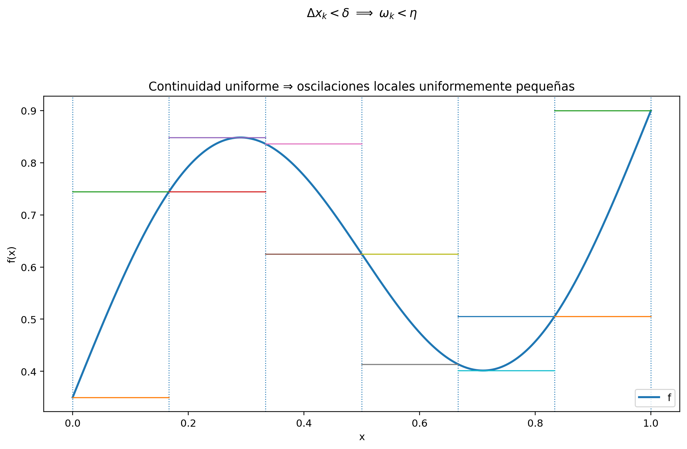
Dónde trabaja realmente la continuidad uniforme
La demostración contiene una traducción exacta entre dos lenguajes.
Heine–Cantor dice:
\[ \boxed{ \text{intervalos horizontalmente cortos} \Longrightarrow \text{variación vertical pequeña} } \]
con un mismo umbral horizontal válido en todo \([a,b]\).
La identidad de la brecha convierte después esa información local en una estimación global:
\[ \boxed{ \text{oscilación pequeña en cada pieza} \Longrightarrow \text{brecha total pequeña}. } \]
La suma de las anchuras no crece al aumentar el número de piezas:
\[ \sum_{k=1}^n\Delta x_k=b-a. \]
Por eso el error local uniforme \(\eta\) se multiplica por una longitud total fija.
Por qué la continuidad punto a punto no basta directamente
Podríamos intentar comenzar solamente con la definición ordinaria de continuidad. Para cada punto \(x\in[a,b]\) y cada \(\eta>0\) obtendríamos algún radio
\[ \delta_x>0. \]
Pero una partición contiene muchas piezas distribuidas por todo el intervalo. Para imponer mediante la malla que cada pieza sea suficientemente corta necesitamos una sola escala que controle todas las zonas a la vez.
No está justificado escribir simplemente
\[ \delta=\inf_{x\in[a,b]}\delta_x \]
y suponer que ese número es positivo: una familia infinita de radios positivos puede tener ínfimo cero. Precisamente este obstáculo fue resuelto en C06 por la compactitud de \([a,b]\), que conduce a Teorema 5.6.
En esta prueba la compactitud actúa dos veces, a través de resultados ya demostrados:
- Teorema 5.5 proporciona acotación global, necesaria para que las sumas de Darboux estén definidas;
- Teorema 5.6 proporciona continuidad uniforme, necesaria para controlar todas las oscilaciones locales con una sola escala.
La integrabilidad no se obtiene de «continuidad + dibujo», sino de esta cadena de resultados.
Un certificado cuantitativo sin usar derivadas
El teorema anterior es cualitativo: garantiza que existe una partición suficientemente fina. Algunas funciones permiten además una cota explícita de la brecha.
Ejemplo 14.6 La función valor absoluto: integrable sin ser diferenciable en el origen. Sea
\[ f(x)=|x|, \qquad -1\le x\le1. \]
La desigualdad triangular inversa da, para cualesquiera \(x,y\in[-1,1]\),
\[ \bigl||x|-|y|\bigr| \le |x-y|. \]
Tomemos una partición arbitraria
\[ P=\{-1=x_0<x_1<\cdots<x_n=1\}. \]
En cada pieza \(I_k=[x_{k-1},x_k]\), para cualesquiera \(x,y\in I_k\),
\[ \bigl||x|-|y|\bigr| \le |x-y| \le \Delta x_k. \]
Por consiguiente, la oscilación local satisface
\[ \omega_k(f,P)\le\Delta x_k. \]
Aplicando Proposición 13.8,
\[ \begin{aligned} U(f,P)-L(f,P) &\le \sum_{k=1}^n(\Delta x_k)^2\\ &\le \|P\| \sum_{k=1}^n\Delta x_k\\ &= 2\|P\|. \end{aligned} \]
Dado \(\varepsilon>0\), cualquier partición con
\[ \|P\|<\frac{\varepsilon}{2} \]
satisface
\[ U(f,P)-L(f,P)<\varepsilon. \]
Así, Teorema 14.1 vuelve a dar
\[ \boxed{ |x|\in\mathcal R[-1,1]. } \]
La demostración no utiliza la derivada. En particular, la falta de diferenciabilidad de \(|x|\) en \(0\) no constituye ninguna obstrucción para su integrabilidad.
El ejemplo muestra que una estimación del tipo
\[ |f(x)-f(y)|\le C|x-y| \]
produce directamente un control cuantitativo sobre la brecha. Sin embargo, el teorema general no necesita disponer de una constante \(C\): la continuidad uniforme basta.
Qué hemos demostrado y qué no
El resultado establece una inclusión fundamental:
\[ \boxed{ C([a,b]) \subseteq \mathcal R[a,b], } \]
entendiendo \(C([a,b])\) como la clase de funciones reales continuas sobre el intervalo.
No hemos demostrado la conversa. Existen funciones Riemann integrables que no son continuas: las funciones escalonadas con saltos de §14.5 ya proporcionan ejemplos, y Corolario 14.1 permite incluso introducir finitísimas discontinuidades puntuales sin alterar la integral.
Tampoco hemos calculado las integrales de todas las funciones continuas. El teorema prueba existencia, no una fórmula de evaluación.
Finalmente, no hemos utilizado el teorema de valor medio integral ni el teorema fundamental del cálculo. Ambos siguen fuera de este capítulo en las fronteras ya fijadas.
La próxima clase estructural será distinta. Una función monótona puede tener discontinuidades y no necesitamos continuidad uniforme para integrarla. En §14.7 construiremos directamente una cota para su brecha a partir de la variación entre los extremos.
Antes de seguir. ¿Qué dos consecuencias de la compactitud se usan en Teorema 14.4 y para qué sirve cada una? ¿Por qué una colección de radios \(\delta_x\) dependientes del punto no proporciona automáticamente una malla global positiva? ¿Cómo convierte Proposición 13.8 el control uniforme de las oscilaciones en una brecha global? En Ejemplo 14.6, ¿por qué la no diferenciabilidad en \(0\) no interviene en absoluto? ¿Qué diferencia hay entre demostrar que una función continua es integrable y calcular el valor de su integral?
14.7 Las funciones monótonas son integrables
La sección anterior obtuvo integrabilidad a partir de una propiedad local que, gracias a la compactitud, se volvía uniforme: la continuidad impedía oscilaciones grandes en intervalos suficientemente cortos.
La monotonía ofrece un mecanismo completamente diferente. Una función monótona puede tener saltos y no necesita ser continua. Lo que sí posee es un control global muy rígido: al recorrer el intervalo en una sola dirección, toda la variación local se acumula sin cancelaciones y queda dominada por la diferencia entre los valores extremos.
Ese hecho permite estimar directamente la brecha de Darboux.
La variación total aparece por telescopado
Supongamos primero que
\[ f:[a,b]\to\mathbb R \]
es no decreciente. Entonces
\[ f(a)\le f(x)\le f(b) \qquad (x\in[a,b]), \]
de modo que \(f\) es acotada y las sumas de Darboux están bien definidas. Para una partición arbitraria
\[ P=\{a=x_0<x_1<\cdots<x_n=b\}, \]
en cada subintervalo
\[ I_k=[x_{k-1},x_k] \]
la monotonía da
\[ \inf_{I_k}f=f(x_{k-1}), \qquad \sup_{I_k}f=f(x_k). \]
Por tanto, la oscilación local es exactamente
\[ \omega_k(f,P) = f(x_k)-f(x_{k-1}). \]
La identidad de la brecha de Proposición 13.8 produce entonces
\[ \begin{aligned} U(f,P)-L(f,P) &= \sum_{k=1}^n \bigl(f(x_k)-f(x_{k-1})\bigr)\Delta x_k. \end{aligned} \]
Como cada anchura satisface
\[ \Delta x_k\le\|P\|, \]
tenemos
\[ \begin{aligned} U(f,P)-L(f,P) &\le \|P\| \sum_{k=1}^n \bigl(f(x_k)-f(x_{k-1})\bigr)\\ &= \|P\|\bigl(f(b)-f(a)\bigr). \end{aligned} \]
La última igualdad es telescópica.
Para una función no creciente ocurre lo mismo con los signos invertidos. En este caso,
\[ f(b)\le f(x)\le f(a) \qquad (x\in[a,b]), \]
así que \(f\) también es acotada. Además,
\[ \omega_k(f,P) = f(x_{k-1})-f(x_k), \]
y por tanto
\[ U(f,P)-L(f,P) \le \|P\|\bigl(f(a)-f(b)\bigr). \]
Ambos casos quedan condensados en un único resultado.
Teorema 14.5 Teorema (integrabilidad de las funciones monótonas). Sean \(a<b\) y sea
\[ f:[a,b]\to\mathbb R \]
monótona, es decir, no decreciente o no creciente. Entonces \(f\) es Riemann integrable en \([a,b]\).
Más precisamente, para toda partición \(P\) de \([a,b]\),
\[ \boxed{ U(f,P)-L(f,P) \le \|P\|\,|f(b)-f(a)|. } \]
Demostración. La desigualdad ya quedó demostrada arriba en los dos sentidos posibles de monotonía. Falta convertirla en el criterio de Darboux.
Escribamos
\[ V:=|f(b)-f(a)|. \]
Hay dos casos.
Caso 1: \(V=0\). Si \(f\) es no decreciente y \(f(a)=f(b)\), entonces para todo \(x\in[a,b]\),
\[ f(a)\le f(x)\le f(b)=f(a), \]
por lo que \(f\) es constante. Lo mismo ocurre si \(f\) es no creciente. Así,
\[ U(f,P)-L(f,P)=0 \]
para toda partición \(P\), y \(f\) es integrable por Teorema 14.1.
Caso 2: \(V>0\). Sea \(\varepsilon>0\). Elegimos una partición uniforme \(P_n\) con
\[ \|P_n\|=\frac{b-a}{n} < \frac{\varepsilon}{V}, \]
lo cual es posible por la propiedad arquimediana. Entonces la cota cuantitativa anterior da
\[ U(f,P_n)-L(f,P_n) \le \|P_n\|V < \varepsilon. \]
Por Teorema 14.1, \(f\) es Riemann integrable. \(\square\)
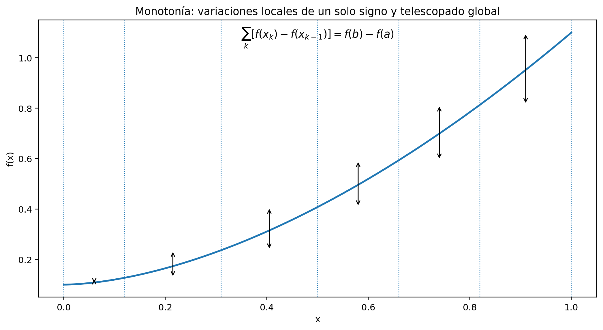
La prueba no necesita continuidad
La diferencia con Teorema 14.4 es estructural.
Para una función continua, el argumento fue
\[ \text{continuidad uniforme} \longrightarrow \text{oscilaciones locales pequeñas} \longrightarrow U-L<\varepsilon. \]
Para una función monótona, en cambio,
\[ \boxed{ \text{monotonía} \longrightarrow \text{variaciones locales con un solo signo} \longrightarrow \text{telescopado global}. } \]
No necesitamos demostrar que cada oscilación sea pequeña por continuidad. Basta multiplicar cada variación local por una anchura menor o igual que la malla y sumar. La suma de todas las variaciones locales es exactamente la variación entre los extremos.
Esta es también la razón por la cual la prueba tolera saltos.
El caso constante no debe esconderse en una división
La estimación
\[ U(f,P)-L(f,P) \le \|P\|V \]
podría tentar a escoger directamente
\[ \|P\|<\frac{\varepsilon}{V}. \]
Pero esa expresión solo tiene sentido cuando \(V>0\). Si \(V=0\), no hay que dividir por cero: la monotonía fuerza que la función sea constante y la brecha ya es exactamente cero.
Este pequeño caso límite es matemáticamente simple, pero lógicamente necesario.
Una función monótona con salto
Ejemplo 14.7 Integrabilidad sin continuidad: un salto. Definamos \(s:[0,1]\to\mathbb R\) por
\[ s(x)= \begin{cases} 0, & 0\le x<\frac12,\\ 1, & \frac12\le x\le1. \end{cases} \]
La función es no decreciente y satisface
\[ s(1)-s(0)=1. \]
Por Teorema 14.5, para toda partición \(P\) de \([0,1]\),
\[ \boxed{ U(s,P)-L(s,P) \le \|P\|. } \]
Así, si \(\|P\|<\varepsilon\), entonces
\[ U(s,P)-L(s,P)<\varepsilon, \]
y Teorema 14.1 certifica nuevamente que
\[ s\in\mathcal R[0,1]. \]
Sin embargo, \(s\) no es continua en \(1/2\): sus valores a la izquierda permanecen en \(0\), mientras que
\[ s\left(\frac12\right)=1. \]
La integrabilidad no requiere continuidad.
En este ejemplo también podríamos haber invocado §14.5 porque \(s\) es escalonada. La utilidad de la prueba actual es distinta: exhibe una estimación que depende únicamente de la monotonía y de la malla, sin utilizar la estructura escalonada particular de \(s\).
Una partición arbitraria ya posee una cota útil
El teorema es ligeramente más fuerte que una mera prueba de existencia. No dice solamente que, dado \(\varepsilon\), podemos fabricar una partición conveniente. Afirma que toda partición satisface
\[ U(f,P)-L(f,P) \le \|P\|\,|f(b)-f(a)|. \]
Por tanto, si \(V=|f(b)-f(a)|>0\), cualquier partición con
\[ \|P\|<\frac{\varepsilon}{V} \]
es automáticamente una partición de Darboux buena para la tolerancia \(\varepsilon\).
Aquí la malla sí basta porque está acompañada por una propiedad estructural concreta de la función: la monotonía transforma la suma de oscilaciones en una cantidad telescópica global. Para una función acotada arbitraria no existe tal estimación.
Continuidad y monotonía son criterios diferentes
Tenemos ahora dos inclusiones importantes:
\[ C([a,b])\subseteq\mathcal R[a,b] \]
por Teorema 14.4, y
\[ \boxed{ \{f:[a,b]\to\mathbb R:\ f\text{ monótona}\} \subseteq \mathcal R[a,b] } \]
por Teorema 14.5.
Ninguna de estas dos clases contiene a la otra en general.
- Una función monótona puede tener saltos, como Ejemplo 14.7.
- Una función continua puede no ser monótona; por ejemplo, \(|x|\) en \([-1,1]\), estudiada en Ejemplo 14.6, decrece en una parte del intervalo y crece en otra.
Por tanto, continuidad y monotonía son dos mecanismos suficientes distintos para obtener integrabilidad.
Qué hemos demostrado y qué queda abierto
La teoría dispone ya de varias clases integrables construidas por rutas independientes:
\[ \boxed{ \text{escalonadas} \quad\cup\quad \text{continuas} \quad\cup\quad \text{monótonas} \subseteq \mathcal R[a,b]. } \]
Además, §14.5 mostró que las modificaciones finitas de una función integrable preservan integrabilidad y valor.
Todavía no hemos demostrado que la clase \(\mathcal R[a,b]\) sea estable bajo suma, multiplicación por escalares, valor absoluto o producto. Esas propiedades requieren argumentos propios y constituyen exactamente el objeto de §14.8.
Tampoco hemos introducido teoremas de valor medio para integrales ni primitivas. La integrabilidad de las funciones monótonas se ha obtenido exclusivamente a partir de sumas de Darboux, malla y telescopado.
Antes de seguir. Para una función no decreciente, ¿por qué los extremos de cada subintervalo determinan exactamente su ínfimo y su supremo? ¿Dónde aparece el telescopado en la prueba de Teorema 14.5? ¿Por qué el caso \(f(a)=f(b)\) debe tratarse antes de dividir por \(|f(b)-f(a)|\)? ¿Qué propiedad adicional hace que una malla pequeña sí controle la brecha de una función monótona, aunque no la controle para una función acotada arbitraria? ¿Qué muestran conjuntamente Ejemplo 14.6 y Ejemplo 14.7 sobre la relación entre continuidad, monotonía e integrabilidad?
14.8 Álgebra y orden de las funciones integrables
Hasta ahora hemos obtenido integrabilidad mediante propiedades especiales de una función: ser escalonada, ser continua, ser monótona o diferir solo en finitísimos puntos de otra función ya integrable. Falta demostrar que la propia clase
\[ \mathcal R[a,b] \]
posee estructura interna.
La pregunta es doble. Si construimos una función nueva a partir de funciones integrables, ¿seguirá siendo integrable? Y, cuando las funciones están ordenadas punto a punto, ¿ese orden se conserva después de integrar?
La primera respuesta será lineal. La segunda mostrará que la integral respeta el orden. Después usaremos ambas para estudiar el valor absoluto, las partes positiva y negativa y el producto.
La integral es lineal
La caracterización uniforme de §14.4 permite demostrar la linealidad sin manipular por separado supremos e ínfimos cuando aparecen escalares negativos.
Teorema 14.6 Teorema (linealidad y monotonía de la integral de Riemann). Sean \(f,g\in\mathcal R[a,b]\) y sean \(\alpha,\beta\in\mathbb R\). Entonces
\[ \alpha f+\beta g\in\mathcal R[a,b] \]
y
\[ \boxed{ \int_a^b \bigl(\alpha f(x)+\beta g(x)\bigr)\,dx = \alpha\int_a^b f(x)\,dx + \beta\int_a^b g(x)\,dx. } \]
Además, si
\[ f(x)\le g(x) \qquad(x\in[a,b]), \]
entonces
\[ \boxed{ \int_a^b f(x)\,dx \le \int_a^b g(x)\,dx. } \]
Demostración. Escribamos
\[ I:=\int_a^b f(x)\,dx, \qquad J:=\int_a^b g(x)\,dx. \]
Sea \(\varepsilon>0\). Por Teorema 14.2 aplicado a \(f\), existe \(\delta_f>0\) tal que toda partición etiquetada \((P,\xi)\) con \(\|P\|<\delta_f\) satisface
\[ \left|R(f;P,\xi)-I\right| < \frac{\varepsilon}{2(1+|\alpha|)}. \]
Análogamente, existe \(\delta_g>0\) tal que
\[ \left|R(g;P,\xi)-J\right| < \frac{\varepsilon}{2(1+|\beta|)} \]
si \(\|P\|<\delta_g\).
Tomemos
\[ \delta:=\min\{\delta_f,\delta_g\}. \]
Para cualquier partición etiquetada \((P,\xi)\) con \(\|P\|<\delta\), la definición de suma etiquetada da exactamente
\[ R(\alpha f+\beta g;P,\xi) = \alpha R(f;P,\xi)+\beta R(g;P,\xi). \]
Por tanto,
\[ \begin{aligned} &\left| R(\alpha f+\beta g;P,\xi)-(\alpha I+\beta J) \right|\\ &\qquad\le |\alpha|\,|R(f;P,\xi)-I| + |\beta|\,|R(g;P,\xi)-J|\\ &\qquad< \frac{\varepsilon}{2} \frac{|\alpha|}{1+|\alpha|} + \frac{\varepsilon}{2} \frac{|\beta|}{1+|\beta|}\\ &\qquad<\varepsilon. \end{aligned} \]
Como \(f\) y \(g\) son acotadas, también lo es \(\alpha f+\beta g\). El número \(\alpha I+\beta J\) satisface así la condición uniforme de Teorema 14.2. Luego \(\alpha f+\beta g\) es Riemann integrable y su integral es ese número.
Probemos ahora la monotonía. Supongamos \(f\le g\) y definamos
\[ h:=g-f. \]
Por la linealidad recién demostrada,
\[ h\in\mathcal R[a,b] \]
y
\[ \int_a^b h = \int_a^b g- \int_a^b f. \]
Como \(h(x)\ge0\) en todo el intervalo, para cualquier partición \(P\) se tiene
\[ L(h,P)\ge0. \]
El encierro de §14.2 implica
\[ 0 \le L(h,P) \le \int_a^b h(x)\,dx. \]
Por consiguiente,
\[ 0 \le \int_a^b g(x)\,dx- \int_a^b f(x)\,dx, \]
que es exactamente la desigualdad anunciada. \(\square\)
La primera parte afirma que \(\mathcal R[a,b]\) es estable bajo combinaciones lineales finitas. La segunda convierte desigualdades punto a punto en desigualdades entre números.
Por ejemplo, si
\[ m\le f(x)\le M \qquad(x\in[a,b]), \]
entonces, comparando con las funciones constantes \(m\) y \(M\),
\[ \boxed{ m(b-a) \le \int_a^b f(x)\,dx \le M(b-a). } \]
En particular, si \(f\ge0\), entonces
\[ \int_a^b f(x)\,dx\ge0. \]
La conversa es falsa: que una integral sea no negativa no obliga a que la función sea no negativa punto a punto.
El valor absoluto no aumenta la oscilación
Para estudiar \(|f|\) volvemos por un momento a las brechas de Darboux.
Sean \(I\subseteq[a,b]\) un subintervalo y \(x,y\in I\). La desigualdad triangular inversa da
\[ \bigl||f(x)|-|f(y)|\bigr| \le |f(x)-f(y)|. \]
Si
\[ \omega(f;I) := \sup_I f-\inf_I f, \]
entonces
\[ |f(x)-f(y)|\le\omega(f;I). \]
Por tanto, todos los valores de \(|f|\) en \(I\) difieren entre sí a lo sumo en \(\omega(f;I)\), y de aquí
\[ \boxed{ \omega(|f|;I) \le \omega(f;I). } \]
Sumando sobre una partición \(P\) y usando Proposición 13.8 obtenemos
\[ \boxed{ U(|f|,P)-L(|f|,P) \le U(f,P)-L(f,P). } \]
Así, cualquier partición de Darboux buena para \(f\) es también buena para \(|f|\).
Valor absoluto, partes positiva y negativa, y productos
Proposición 14.2 Proposición (estabilidad por valor absoluto, partes positiva/negativa y producto). Sean \(f,g\in\mathcal R[a,b]\). Entonces:
- \(|f|\in\mathcal R[a,b]\);
- las funciones \[ f^+(x):=\max\{f(x),0\} =\frac{|f(x)|+f(x)}2, \] y \[ f^-(x):=\max\{-f(x),0\} =\frac{|f(x)|-f(x)}2 \] pertenecen a \(\mathcal R[a,b]\);
- \(fg\in\mathcal R[a,b]\).
Además,
\[ f=f^+-f^-, \qquad |f|=f^++f^-. \]
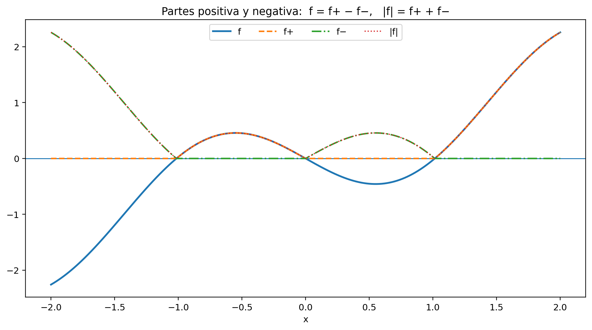
Demostración. Para \(|f|\), sea \(\varepsilon>0\). Como \(f\) es integrable, Teorema 14.1 proporciona una partición \(P\) con
\[ U(f,P)-L(f,P)<\varepsilon. \]
La desigualdad de brechas recién obtenida da
\[ U(|f|,P)-L(|f|,P)<\varepsilon. \]
Por Teorema 14.1, \(|f|\) es integrable.
Las fórmulas de \(f^+\) y \(f^-\) son identidades punto a punto. Como \(f\) y \(|f|\) son integrables, Teorema 14.6 implica que ambas partes son integrables. Las identidades
\[ f=f^+-f^- \]
y
\[ |f|=f^++f^- \]
se verifican directamente separando los casos \(f(x)\ge0\) y \(f(x)<0\).
Falta el producto. Como \(f\) y \(g\) son acotadas, existen constantes \(A,B>0\) tales que
\[ |f(x)|\le A, \qquad |g(x)|\le B \]
para todo \(x\in[a,b]\).
En un subintervalo \(I\subseteq[a,b]\) y para cualesquiera \(x,y\in I\),
\[ \begin{aligned} |f(x)g(x)-f(y)g(y)| &\le |f(x)|\,|g(x)-g(y)| + |g(y)|\,|f(x)-f(y)|\\ &\le A\,\omega(g;I) + B\,\omega(f;I). \end{aligned} \]
Por tanto,
\[ \omega(fg;I) \le A\,\omega(g;I) + B\,\omega(f;I). \]
Aplicando esta estimación a cada pieza de una partición \(P\) y usando Proposición 13.8,
\[ \boxed{ U(fg,P)-L(fg,P) \le A\bigl(U(g,P)-L(g,P)\bigr) + B\bigl(U(f,P)-L(f,P)\bigr). } \]
Sea \(\varepsilon>0\). Por Teorema 14.1 existen particiones \(P_f,P_g\) tales que
\[ U(f,P_f)-L(f,P_f) < \frac{\varepsilon}{2B} \]
y
\[ U(g,P_g)-L(g,P_g) < \frac{\varepsilon}{2A}. \]
Tomemos el refinamiento común
\[ P:=P_f\vee P_g. \]
Por Proposición 13.8, las dos brechas individuales no aumentan al refinar. Por ello,
\[ \begin{aligned} U(fg,P)-L(fg,P) &\le A\bigl(U(g,P)-L(g,P)\bigr) + B\bigl(U(f,P)-L(f,P)\bigr)\\ &< A\frac{\varepsilon}{2A} + B\frac{\varepsilon}{2B}\\ &=\varepsilon. \end{aligned} \]
El criterio de Darboux concluye que \(fg\) es integrable. \(\square\)
La prueba del producto muestra otra vez por qué el refinamiento común es una herramienta estructural. Las particiones que controlan a \(f\) y a \(g\) pueden ser distintas; al refinarlas simultáneamente obtenemos una sola partición en la cual ambas brechas son pequeñas.
No hay, sin embargo, una regla multiplicativa para los valores integrales. En general,
\[ \int_a^b f(x)g(x)\,dx \ne \left(\int_a^b f(x)\,dx\right) \left(\int_a^b g(x)\,dx\right). \]
Por ejemplo, en \([0,2]\) la función constante \(1\) satisface
\[ \int_0^2 1\,dx=2, \]
mientras que
\[ \int_0^2 1\cdot1\,dx=2\ne4. \]
La estabilidad del producto significa que \(fg\) es integrable, no que la integral transforme productos en productos de integrales.
La desigualdad triangular para la integral
Corolario 14.2 Corolario (desigualdad triangular integral). Si \(f\in\mathcal R[a,b]\), entonces
\[ \boxed{ \left| \int_a^b f(x)\,dx \right| \le \int_a^b |f(x)|\,dx. } \]
Demostración. Punto a punto,
\[ -|f(x)|\le f(x)\le |f(x)|. \]
Por Proposición 14.2, \(|f|\) es integrable, y por Teorema 14.6 también lo es \(-|f|\). Aplicando la monotonía de la integral,
\[ -\int_a^b|f(x)|\,dx \le \int_a^b f(x)\,dx \le \int_a^b|f(x)|\,dx. \]
La caracterización elemental del valor absoluto de un número real produce la desigualdad anunciada. \(\square\)
Como consecuencia, las partes positiva y negativa satisfacen
\[ \int_a^b f = \int_a^b f^+- \int_a^b f^-, \]
y
\[ \int_a^b |f| = \int_a^b f^++ \int_a^b f^-. \]
También las funciones
\[ \max\{f,g\} = \frac{f+g+|f-g|}{2} \]
y
\[ \min\{f,g\} = \frac{f+g-|f-g|}{2} \]
son Riemann integrables.
La clausura genera funciones fuera de las clases iniciales
Ejemplo 14.8 Una función integrable que no es continua ni monótona, obtenida algebraicamente. En \([0,1]\) consideremos la función identidad
\[ f(x)=x \]
y la función de salto de Ejemplo 14.7,
\[ s(x)= \begin{cases} 0, & 0\le x<\frac12,\\ 1, & \frac12\le x\le1. \end{cases} \]
Sabemos que \(f\) es integrable por Ejemplo 14.2 y que \(s\) es integrable por Teorema 14.5. Por Teorema 14.6,
\[ 1-s\in\mathcal R[0,1], \]
y por Proposición 14.2,
\[ h:=f(1-s)\in\mathcal R[0,1]. \]
Explícitamente,
\[ h(x)= \begin{cases} x, & 0\le x<\frac12,\\ 0, & \frac12\le x\le1. \end{cases} \]
La función no es continua en \(1/2\): los valores por la izquierda se aproximan a \(1/2\), mientras que
\[ h\left(\frac12\right)=0. \]
Tampoco es monótona en todo \([0,1]\): aumenta antes de \(1/2\) y después cae a \(0\).
Así, la estabilidad algebraica de \(\mathcal R[0,1]\) produce funciones integrables que no pertenecen a ninguna de las dos clases suficientes estudiadas en §§14.6–14.7.
Qué estructura tenemos ahora
Podemos resumir §14.8 diciendo que
\[ \boxed{ \mathcal R[a,b] \text{ es un espacio vectorial de funciones, cerrado además bajo} \ |\cdot|\ \text{ y producto.} } \]
La integral
\[ f\longmapsto\int_a^b f(x)\,dx \]
es lineal y preserva el orden:
\[ f\le g \Longrightarrow \int_a^b f\le\int_a^b g. \]
De la interacción entre ambas propiedades surgen las cotas por constantes, la positividad y la desigualdad triangular.
Todavía falta una estructura distinta: cómo cambia la integral cuando cambiamos el intervalo. En §14.9 estudiaremos restricciones, aditividad respecto de un punto intermedio y, solo después, las convenciones de orientación para límites iguales o invertidos.
Antes de seguir. ¿Por qué la prueba de linealidad mediante Teorema 14.2 evita tener que distinguir el signo de \(\alpha\) y \(\beta\) en sumas inferiores y superiores? ¿Cómo se deduce la monotonía de la integral a partir de la positividad de \(g-f\)? ¿Por qué \(\omega(|f|;I)\le\omega(f;I)\) basta para probar integrabilidad de \(|f|\)? En la prueba del producto, ¿por qué necesitamos un refinamiento común de dos particiones inicialmente distintas? ¿Qué diferencia hay entre afirmar que \(fg\) es integrable y afirmar falsamente que la integral es multiplicativa? ¿Qué enseña Ejemplo 14.8 sobre el alcance de los criterios de continuidad y monotonía?
14.9 Restricción, aditividad por intervalos y orientación
Hasta ahora el intervalo \([a,b]\) ha permanecido fijo. Hemos cambiado la función —por combinaciones lineales, valor absoluto, productos o modificaciones finitas—, pero no hemos preguntado qué ocurre cuando cortamos el intervalo o invertimos el orden de sus extremos.
La primera cuestión es lógica antes que algebraica. Si \(c\) es un punto interior, ¿la integrabilidad sobre \([a,b]\) equivale a la integrabilidad de las dos restricciones sobre \([a,c]\) y \([c,b]\)? Solo después de resolver esa pregunta tendrá sentido demostrar la fórmula
\[ \int_a^b f = \int_a^c f+ \int_c^b f. \]
La prueba volverá a las brechas de Darboux. La razón es simple: cuando una partición contiene el punto \(c\), sus piezas quedan separadas exactamente en dos familias, una a cada lado de \(c\).
Una brecha global se descompone en dos brechas locales
Sea
\[ Q=\{x_0,\ldots,x_n\} \]
una partición de \([a,b]\) que contiene \(c\). Escribamos
\[ Q_-:=Q\cap[a,c], \qquad Q_+:=Q\cap[c,b]. \]
Entonces \(Q_-\) es una partición de \([a,c]\) y \(Q_+\) una partición de \([c,b]\). Si
\[ f_-:=f|_{[a,c]}, \qquad f_+:=f|_{[c,b]}, \]
la definición de las sumas inferior y superior da las identidades exactas
\[ L(f,Q) = L(f_-,Q_-)+L(f_+,Q_+), \]
y
\[ U(f,Q) = U(f_-,Q_-)+U(f_+,Q_+). \]
Por tanto,
\[ \boxed{ U(f,Q)-L(f,Q) = \bigl(U(f_-,Q_-)-L(f_-,Q_-)\bigr) + \bigl(U(f_+,Q_+)-L(f_+,Q_+)\bigr). } \]
Las dos cantidades del lado derecho son no negativas. Así, una brecha global pequeña obliga a que ambas brechas locales sean pequeñas; y, recíprocamente, dos brechas locales pequeñas se pueden ensamblar en una brecha global pequeña.
Integrabilidad local y aditividad
Teorema 14.7 Teorema (restricción, recomposición y aditividad de la integral). Sean \(a<c<b\) y sea \(f:[a,b]\to\mathbb R\). Son equivalentes:
- \(f\in\mathcal R[a,b]\);
- las restricciones \[ f|_{[a,c]}\in\mathcal R[a,c], \qquad f|_{[c,b]}\in\mathcal R[c,b]. \]
Cuando estas condiciones se cumplen,
\[ \boxed{ \int_a^b f(x)\,dx = \int_a^c f(x)\,dx + \int_c^b f(x)\,dx. } \]
Demostración. Supongamos primero que \(f\in\mathcal R[a,b]\). Sea \(\varepsilon>0\). Por Teorema 14.1 existe una partición \(P\) de \([a,b]\) tal que
\[ U(f,P)-L(f,P)<\varepsilon. \]
Insertamos el punto \(c\) y formamos
\[ Q:=P\cup\{c\}. \]
Como \(Q\) refina a \(P\), Proposición 13.8 implica
\[ U(f,Q)-L(f,Q) \le U(f,P)-L(f,P) <\varepsilon. \]
La descomposición anterior escribe esta brecha como suma de las dos brechas correspondientes a las restricciones. Como ambas son no negativas,
\[ U(f_-,Q_-)-L(f_-,Q_-) <\varepsilon \]
y
\[ U(f_+,Q_+)-L(f_+,Q_+) <\varepsilon. \]
Las restricciones son acotadas porque \(f\) lo es. El criterio de Darboux concluye que
\[ f_-\in\mathcal R[a,c], \qquad f_+\in\mathcal R[c,b]. \]
Recíprocamente, supongamos que ambas restricciones son integrables. En particular, existen \(B_-,B_+>0\) tales que
\[ |f(x)|\le B_- \quad(a\le x\le c), \]
y
\[ |f(x)|\le B_+ \quad(c\le x\le b). \]
Luego \(f\) es acotada en \([a,b]\) por \(\max\{B_-,B_+\}\).
Sea \(\varepsilon>0\). Por Teorema 14.1 podemos elegir una partición \(P_-\) de \([a,c]\) y una partición \(P_+\) de \([c,b]\) tales que
\[ U(f_-,P_-)-L(f_-,P_-) <\frac{\varepsilon}{2}, \]
y
\[ U(f_+,P_+)-L(f_+,P_+) <\frac{\varepsilon}{2}. \]
La unión
\[ P:=P_-\cup P_+ \]
es una partición de \([a,b]\) que contiene \(c\). Por la identidad de descomposición,
\[ \begin{aligned} U(f,P)-L(f,P) ={}& \bigl(U(f_-,P_-)-L(f_-,P_-)\bigr)\\ &+ \bigl(U(f_+,P_+)-L(f_+,P_+)\bigr)\\ <&\varepsilon. \end{aligned} \]
De nuevo Teorema 14.1 implica \(f\in\mathcal R[a,b]\).
Falta demostrar la igualdad de integrales. Escribamos
\[ I:=\int_a^b f(x)\,dx, \qquad I_-:=\int_a^c f(x)\,dx, \qquad I_+:=\int_c^b f(x)\,dx. \]
Sea \(\varepsilon>0\). Elegimos, como arriba, particiones \(P_-\) y \(P_+\) cuyas brechas sean menores que \(\varepsilon/2\), y ponemos \(P=P_-\cup P_+\). Entonces
\[ U(f,P)-L(f,P)<\varepsilon. \]
Por el encierro integral de §14.2,
\[ L(f,P)\le I\le U(f,P). \]
Además,
\[ L(f_-,P_-)\le I_-\le U(f_-,P_-) \]
y
\[ L(f_+,P_+)\le I_+\le U(f_+,P_+). \]
Sumando estas dos últimas cadenas y usando la descomposición exacta de las sumas,
\[ L(f,P) \le I_-+I_+ \le U(f,P). \]
Así, tanto \(I\) como \(I_-+I_+\) pertenecen al mismo intervalo de longitud menor que \(\varepsilon\). Por tanto,
\[ |I-(I_-+I_+)|<\varepsilon. \]
Como esto vale para todo \(\varepsilon>0\), necesariamente
\[ I=I_-+I_+. \]
Queda probado el teorema. \(\square\)
El resultado contiene dos mensajes diferentes. La integrabilidad es local respecto de una descomposición finita del intervalo, y el valor integral es aditivo respecto del intervalo. Ninguna de las dos afirmaciones utiliza primitivas ni derivadas.
De dos piezas a finitísimas piezas
La forma con un solo punto intermedio se itera inmediatamente.
Corolario 14.3 Corolario (localidad finita y suma por una partición). Sea
\[ P=\{x_0,x_1,\ldots,x_n\}, \qquad x_0=a<x_1<\cdots<x_n=b. \]
Para una función \(f:[a,b]\to\mathbb R\), son equivalentes:
- \(f\in\mathcal R[a,b]\);
- para cada \(k=1,\ldots,n\), \[ f|_{[x_{k-1},x_k]} \in \mathcal R[x_{k-1},x_k]. \]
Cuando se cumplen,
\[ \boxed{ \int_a^b f(x)\,dx = \sum_{k=1}^n \int_{x_{k-1}}^{x_k} f(x)\,dx. } \]
Demostración. Aplicamos Teorema 14.7 repetidamente a los puntos interiores \(x_1,\ldots,x_{n-1}\). La equivalencia de integrabilidad se obtiene por inducción sobre el número de piezas, y en cada paso la fórmula de aditividad sustituye una integral sobre un intervalo por la suma de las dos integrales sobre los subintervalos que lo componen. \(\square\)
Este corolario formaliza una práctica que, para funciones escalonadas, ya aparecía de manera elemental en C14. Ahora la descomposición vale para toda función Riemann integrable.
Los límites invertidos son una convención de orientación
Hasta aquí todas las integrales de Riemann se han definido con extremo inferior estrictamente menor que el superior. Las expresiones
\[ \int_a^a f(x)\,dx \]
y
\[ \int_b^a f(x)\,dx \qquad(a<b) \]
no provienen directamente de Definición 14.2. Las introducimos ahora por convención para que la aditividad conserve una forma uniforme al cambiar la orientación.
Definición 14.3 Definición (integral orientada). Sea \(J\subseteq\mathbb R\) un intervalo y sea \(f:J\to\mathbb R\). Para \(u,v\in J\):
- si \(u=v\), definimos \[ \boxed{\int_u^u f(x)\,dx:=0;} \]
- si \(u<v\) y \(f\) es Riemann integrable en \([u,v]\), conservamos la integral ya definida;
- si \(u>v\) y \(f\) es Riemann integrable en \([v,u]\), definimos \[ \boxed{ \int_u^v f(x)\,dx := -\int_v^u f(x)\,dx. } \]
Estas convenciones extienden la notación; no modifican la definición primaria de integrabilidad de Riemann para intervalos no degenerados.
La igualdad
\[ \int_u^v f=-\int_v^u f \]
queda entonces válida también cuando \(u=v\), pues ambos miembros son cero.
La aditividad orientada ya no necesita ordenar los tres puntos
Proposición 14.3 Proposición (aditividad orientada). Sean \(r,s,t\) puntos de un intervalo \(J\) y sea \(f:J\to\mathbb R\). Supongamos que \(f\) es Riemann integrable en el intervalo cerrado
\[ [m,M], \qquad m:=\min\{r,s,t\}, \quad M:=\max\{r,s,t\}, \]
cuando \(m<M\). Entonces
\[ \boxed{ \int_r^s f(x)\,dx + \int_s^t f(x)\,dx = \int_r^t f(x)\,dx. } \]
Demostración. Fijemos el extremo mínimo \(m\) y, para \(x\in[m,M]\), escribamos simplemente
\[ A(x):=\int_m^x f(u)\,du, \]
usando la convención \(A(m)=0\).
Si \(x\le y\), Teorema 14.7 aplicado al punto intermedio \(x\) —o trivialmente la convención si \(x=m\) o \(x=y\)— da
\[ A(y)=A(x)+\int_x^y f(u)\,du. \]
Por tanto,
\[ \int_x^y f(u)\,du=A(y)-A(x). \]
Si \(x>y\), la definición de orientación produce la misma identidad:
\[ \int_x^y f(u)\,du =-\int_y^x f(u)\,du =-(A(x)-A(y)) =A(y)-A(x). \]
Así, para cualesquiera \(x,y\in[m,M]\),
\[ \boxed{ \int_x^y f(u)\,du=A(y)-A(x). } \]
Aplicándola a los pares \((r,s)\), \((s,t)\) y \((r,t)\),
\[ \begin{aligned} \int_r^s f + \int_s^t f &= [A(s)-A(r)]+[A(t)-A(s)]\\ &=A(t)-A(r)\\ &=\int_r^t f. \end{aligned} \]
La cancelación es puramente algebraica; no se ha introducido ninguna primitiva de \(f\). \(\square\)
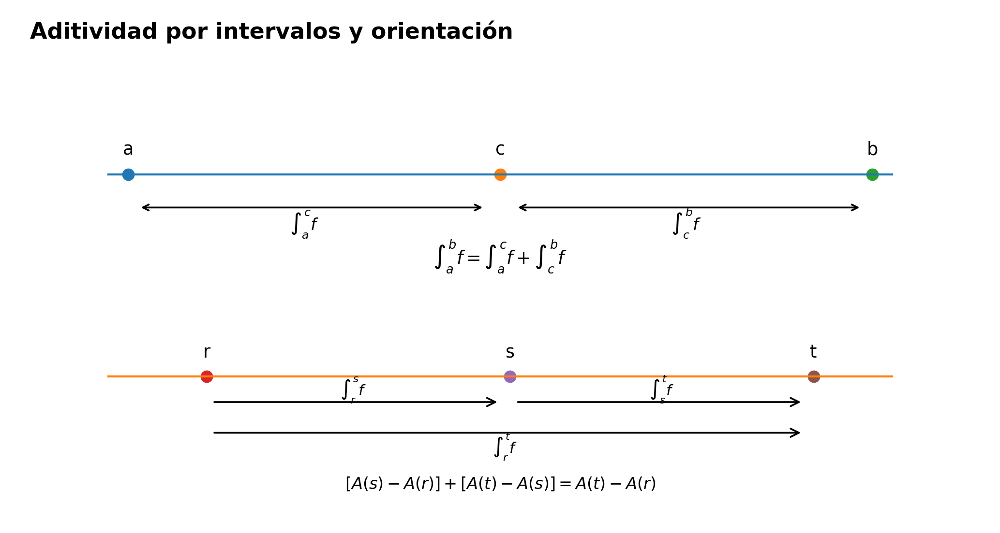
El símbolo \(A(x)\) de la prueba es solo una abreviatura para un número integral con extremo variable. No hemos afirmado nada sobre continuidad o diferenciabilidad de \(A\); esas cuestiones pertenecen al teorema fundamental del cálculo de C17.
Un salto visto con ambas orientaciones
Ejemplo 14.9 Aditividad y orientación para una función con salto. Consideremos en \([0,1]\) la función de Ejemplo 14.7,
\[ s(x)= \begin{cases} 0, & 0\le x<\frac12,\\ 1, & \frac12\le x\le1. \end{cases} \]
En \([0,1/2]\) difiere de la función constante \(0\) solo en el punto \(1/2\). Por Corolario 14.1,
\[ \int_0^{1/2}s(x)\,dx=0. \]
En \([1/2,1]\) es constantemente igual a \(1\), así que
\[ \int_{1/2}^1s(x)\,dx=\frac12. \]
Por Teorema 14.7,
\[ \boxed{ \int_0^1s(x)\,dx =0+\frac12 =\frac12. } \]
Al invertir la orientación,
\[ \int_1^{1/2}s(x)\,dx=-\frac12, \qquad \int_{1/2}^{0}s(x)\,dx=0, \]
y Proposición 14.3 da
\[ \int_1^{1/2}s + \int_{1/2}^{0}s = \int_1^0s =-\frac12. \]
El punto de salto no genera ningún término adicional: la aditividad se refiere a integrales sobre intervalos, no a una suma de «áreas más un valor en el corte».
Qué queda fijado antes del laboratorio
La teoría dispone ahora de dos tipos de estructura complementarios.
Respecto de la función, §14.8 estableció linealidad, orden y estabilidad algebraica. Respecto del intervalo, esta sección ha establecido
\[ \boxed{ \int_a^b f = \int_a^c f+ \int_c^b f } \]
para \(a<c<b\), y después ha extendido esa identidad a cualquier orden de los extremos mediante orientación.
Conviene conservar el orden lógico:
\[ \text{integrabilidad en subintervalos} \longleftrightarrow \text{integrabilidad global} \longrightarrow \text{aditividad} \longrightarrow \text{convención de orientación}. \]
No hemos usado el teorema de valor medio integral ni el teorema fundamental del cálculo. Tampoco hemos afirmado que la función
\[ x\longmapsto\int_a^x f(t)\,dt \]
tenga todavía propiedades analíticas especiales.
Antes de seguir. ¿Por qué insertar \(c\) en una partición global permite separar exactamente la brecha en dos términos no negativos? ¿Cómo se demuestra la dirección recíproca cuando las particiones buenas de \([a,c]\) y \([c,b]\) son distintas? En la prueba de aditividad, ¿por qué basta encerrar tanto \(I\) como \(I_-+I_+\) entre la misma suma inferior y la misma suma superior? ¿Por qué \(\int_b^a f=-\int_a^b f\) es una convención posterior y no parte de Definición 14.2? ¿Cómo evita Proposición 14.3 una discusión de los seis posibles órdenes de tres puntos? ¿Por qué la abreviatura \(A(x)=\int_m^x f\) no anticipa todavía el teorema fundamental del cálculo?
14.10 Laboratorio de integrabilidad: qué basta y qué no
A esta altura del capítulo disponemos de varios caminos correctos para demostrar integrabilidad y también de varios razonamientos que parecen suficientes pero no lo son. Conviene reunirlos antes del banco de ejercicios.
El objetivo de este laboratorio no es añadir teoría nueva. Es aprender a reconocer qué tipo de información tenemos en cada problema y qué resultado ya demostrado permite transformarla legítimamente en una conclusión sobre integrabilidad.
La pregunta guía será siempre la misma:
\[ \boxed{ \text{¿qué controla realmente todas las aproximaciones relevantes?} } \]
No basta con que una aproximación concreta se comporte bien. La definición de Riemann y sus criterios equivalentes son afirmaciones globales sobre particiones, brechas o sumas etiquetadas.
Estación 1. Cuatro puertas suficientes que ya están demostradas
Hasta aquí hemos probado cuatro mecanismos distintos que garantizan integrabilidad.
Funciones escalonadas. Por Teorema 14.3, toda función escalonada es Riemann integrable y su integral general coincide con la integral elemental de C14.
Funciones continuas. Por Teorema 14.4, toda función continua en un intervalo cerrado es integrable. El mecanismo decisivo no fue la derivabilidad, sino la continuidad uniforme producida por la compactitud.
Funciones monótonas. Por Teorema 14.5, toda función monótona en un intervalo cerrado es integrable, incluso si posee saltos. La cota cuantitativa fue
\[ U(f,P)-L(f,P) \le \|P\|\,|f(b)-f(a)|. \]
Modificaciones finitas. Por Corolario 14.1, si una función integrable se cambia en finitísimos puntos, la nueva función sigue siendo integrable y conserva exactamente el mismo valor integral.
Estas cuatro rutas son criterios suficientes. Ninguna de ellas caracteriza por sí sola a todas las funciones Riemann integrables.
En efecto, Ejemplo 14.8 ya produjo una función integrable obtenida mediante operaciones algebraicas que no pertenece simplemente a las clases «continua» o «monótona». La teoría de §14.8 muestra que la clase \(\mathcal R[a,b]\) es mucho más amplia que cada una de esas familias iniciales.
Estación 2. Acotación no significa integrabilidad
La definición primaria Definición 14.2 exige que la función sea acotada antes de preguntar si las integrales inferior y superior coinciden. Esa hipótesis es necesaria para la teoría de Darboux desarrollada aquí, pero no es suficiente.
La función de Dirichlet de Ejemplo 14.1,
\[ d(x)= \begin{cases} 1, & x\in\mathbb Q,\\ 0, & x\notin\mathbb Q, \end{cases} \qquad 0\le x\le1, \]
es acotada y, sin embargo, para toda partición \(P\) satisface
\[ L(d,P)=0, \qquad U(d,P)=1. \]
Por tanto,
\[ U(d,P)-L(d,P)=1 \]
para toda partición. No existe ninguna escala en la que la brecha comience a cerrarse.
Así,
\[ \boxed{ \text{acotada} \centernot\Longrightarrow \text{Riemann integrable}. } \]
La acotación permite formular el problema; no lo resuelve.
Estación 3. Una brecha pequeña no es lo mismo que brechas arbitrariamente pequeñas
Supongamos que encontramos una partición \(P\) para la cual
\[ U(f,P)-L(f,P)=10^{-6}. \]
Ese dato puede ser excelente como aproximación numérica, pero por sí solo no demuestra integrabilidad. El criterio de Darboux Teorema 14.1 exige
\[ \forall\varepsilon>0\ \exists P: U(f,P)-L(f,P)<\varepsilon. \]
El orden de los cuantificadores es parte del teorema.
La familia escalada de la función de Dirichlet lo muestra con precisión. Para un número fijo \(c>0\), sea
\[ d_c(x)= \begin{cases} c, & x\in\mathbb Q,\\ 0, & x\notin\mathbb Q. \end{cases} \]
En toda partición,
\[ U(d_c,P)-L(d_c,P)=c. \]
Si \(c=10^{-6}\), entonces toda partición posee una brecha que puede parecer «muy pequeña», pero al pedir
\[ \varepsilon=\frac c2 \]
ninguna sirve.
Hay, sin embargo, un caso especial importante: si para alguna partición se obtiene exactamente
\[ U(f,P)-L(f,P)=0, \]
entonces esa misma partición satisface el criterio para todo \(\varepsilon>0\), y la función sí es integrable. Lo insuficiente es una brecha fija positiva, por pequeña que parezca.
Estación 4. Malla pequeña no implica brecha pequeña
Otro error frecuente consiste en suponer que una partición muy fina debe producir automáticamente una buena aproximación.
La función \(d\) anterior lo refuta de inmediato. Para cada \(n\) podemos tomar la partición uniforme
\[ P_n= \left\{0,\frac1n,\frac2n,\ldots,1\right\}, \]
cuya malla satisface
\[ \|P_n\|=\frac1n\longrightarrow0. \]
Sin embargo,
\[ U(d,P_n)-L(d,P_n)=1 \]
para todo \(n\).
Por tanto,
\[ \boxed{ \|P_n\|\to0 \centernot\Longrightarrow U(f,P_n)-L(f,P_n)\to0 } \]
para una función acotada arbitraria.
La malla es una medida geométrica de la partición; la brecha depende además de la oscilación de la función dentro de sus piezas. En §§14.6–14.7 pudimos relacionar ambas cantidades porque la continuidad uniforme y la monotonía proporcionaban precisamente ese control adicional.
Y en §14.4, Teorema 14.2 demostró algo todavía más fuerte para una función ya integrable: existe una escala de malla a partir de la cual todas las sumas etiquetadas quedan cerca de la integral. Ese resultado no autoriza a comenzar la teoría suponiendo que «malla pequeña» implica por sí sola «buena suma».
Estación 5. Una familia convergente de sumas etiquetadas tampoco basta
La misma función \(d\) permite aislar un error lógico más sutil.
Tomemos las particiones uniformes \(P_n\) anteriores. Cada subintervalo no degenerado contiene números racionales e irracionales. Por tanto podemos elegir, para cada pieza de \(P_n\), una etiqueta irracional. Llamemos \(\xi^{(n)}\) a esa elección. Entonces
\[ d(\xi_k^{(n)})=0 \]
para toda etiqueta y
\[ R(d;P_n,\xi^{(n)})=0 \]
para todo \(n\). En particular,
\[ R(d;P_n,\xi^{(n)})\longrightarrow0. \]
Si en las mismas particiones escogemos en cambio etiquetas racionales \(\eta^{(n)}\), obtenemos
\[ R(d;P_n,\eta^{(n)})=1 \]
para todo \(n\), y por tanto
\[ R(d;P_n,\eta^{(n)})\longrightarrow1. \]
Así, una función no integrable puede poseer una familia perfectamente convergente de sumas etiquetadas —incluso muchas—. Lo que falla es la independencia respecto de las elecciones.
El contraste correcto es
\[ \begin{array}{ccl} \text{una familia escogida converge} &\quad&\text{insuficiente},\\[4pt] \text{todas las sumas con malla pequeña se acercan al mismo }I &&\text{equivalente a integrabilidad}. \end{array} \]
La segunda afirmación es exactamente Teorema 14.2.
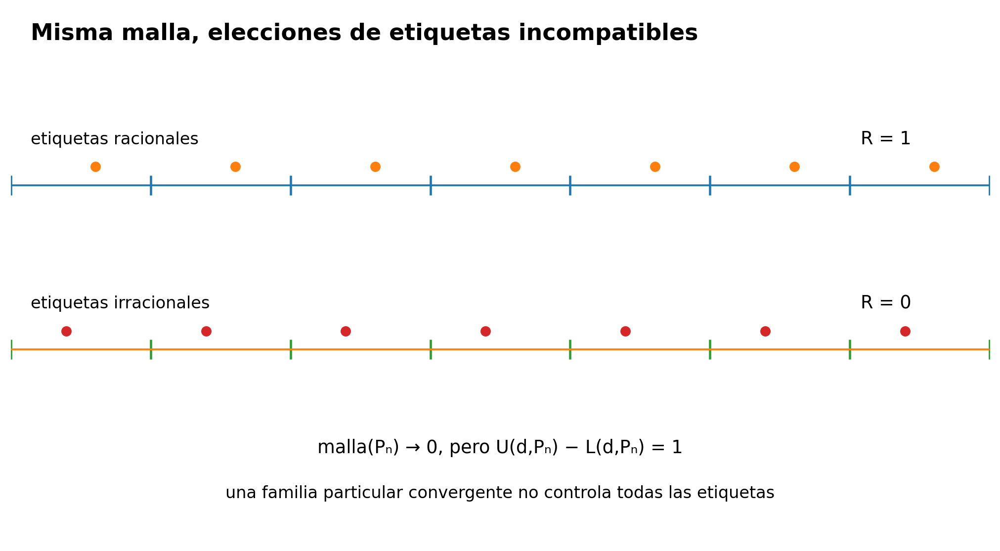
Estación 6. Qué control sí es suficiente
Podemos organizar los certificados correctos en tres niveles.
Nivel A: definición. Si las integrales inferior y superior globales coinciden,
\[ \underline{\int_a^b}f = \overline{\int_a^b}f, \]
entonces \(f\) es integrable por Definición 14.2.
Nivel B: brechas de Darboux. Si para cada \(\varepsilon>0\) podemos construir una partición con
\[ U(f,P)-L(f,P)<\varepsilon, \]
entonces \(f\) es integrable por Teorema 14.1.
Nivel C: todas las sumas etiquetadas finas. Si existe \(I\in\mathbb R\) tal que
\[ \forall\varepsilon>0\ \exists\delta>0\ \forall(P,\xi): \|P\|<\delta \Longrightarrow |R(f;P,\xi)-I|<\varepsilon, \]
entonces \(f\) es integrable y su integral vale \(I\) por Teorema 14.2.
Los niveles B y C no son definiciones nuevas dentro de CPM: son caracterizaciones equivalentes ya demostradas de la definición primaria del nivel A.
Por debajo de estos niveles quedan datos que pueden ser útiles pero que necesitan una pieza lógica adicional: una partición concreta, una brecha positiva fija, una sucesión particular de mallas, una elección especial de etiquetas o una gráfica que «parece tener área».
Estación 7. Reparación de seis razonamientos circulares o incompletos
Razonamiento 1. «\(f\) es continua, luego tiene una primitiva, y por el teorema fundamental del cálculo es integrable.»
La conclusión es verdadera, pero esa ruta no pertenece a C15 y sería circular respecto de la arquitectura del tratado. Aquí la integrabilidad de las continuas se obtuvo directamente en Teorema 14.4 mediante continuidad uniforme y Darboux. El FTC se demostrará después, en C17.
Razonamiento 2. «\(f\) es monótona, así que el área bajo su gráfica existe.»
La frase geométrica no constituye una prueba. La reparación es cuantitativa: Teorema 14.5 demuestra
\[ U(f,P)-L(f,P) \le \|P\|\,|f(b)-f(a)|, \]
y de allí se aplica el criterio de Darboux.
Razonamiento 3. «Una escalonada ya tenía integral en C14, por tanto esa integral es automáticamente la integral de Riemann.»
No. Antes había dos construcciones diferentes. Teorema 14.3 fue necesario para demostrar primero integrabilidad de la escalonada y después igualdad entre la integral elemental y la integral general.
Razonamiento 4. «Cambiar unos pocos puntos no importa porque los puntos tienen anchura cero.»
La intuición es útil, pero no prueba la afirmación para sumas etiquetadas, donde un punto excepcional puede ser elegido como etiqueta. Corolario 14.1 controla exactamente cuánto pueden cambiar las sumas: solo las piezas etiquetadas en esos finitísimos puntos contribuyen, y su longitud total queda controlada por la malla.
Razonamiento 5. «Como la integral es lineal, si \(f\) y \(g\) son integrables entonces \(f+g\) también lo es.»
El orden está invertido. Para poder escribir la integral de \(f+g\) hay que demostrar primero que \(f+g\) es integrable. Teorema 14.6 establece simultáneamente el cierre de \(\mathcal R[a,b]\) bajo combinaciones lineales y la fórmula correspondiente para la integral.
Razonamiento 6. «La igualdad \(\int_a^b f=\int_a^c f+\int_c^b f\) es evidente porque estamos partiendo el área en dos.»
De nuevo, la imagen geométrica anticipa el resultado pero no sustituye su prueba. Teorema 14.7 demuestra antes la equivalencia entre integrabilidad global y local, y solo después identifica los valores integrales. La orientación de §14.9 se añadió todavía más tarde como convención compatible con esa aditividad.
La regla de trabajo que emerge es sencilla:
\[ \boxed{ \text{antes de usar una propiedad de }\int f, \text{ hay que justificar que la integral existe.} } \]
Estación 8. Tabla de diagnóstico
| Información disponible | ¿Basta para integrabilidad? | Razón correcta |
|---|---|---|
| \(f\) es acotada | No | Es hipótesis previa, no criterio suficiente; Ejemplo 14.1. |
| Existe una partición con brecha positiva pequeña | No | Falta controlar toda tolerancia \(\varepsilon>0\). |
| Existe una partición con brecha exactamente \(0\) | Sí | La misma partición sirve para todo \(\varepsilon>0\) en Teorema 14.1. |
| Existe \((P_n)\) con \(U(f,P_n)-L(f,P_n)\to0\) | Sí | Reformulación secuencial del criterio de Darboux. |
| Existe \((P_n)\) con \(\|P_n\|\to0\) | No | La malla no controla por sí sola la oscilación de \(f\). |
| Una familia particular \(R(f;P_n,\xi^{(n)})\) converge | No | Solo controla esas elecciones; la función de Dirichlet da contraejemplo. |
| Todas las sumas etiquetadas suficientemente finas se acercan al mismo \(I\) | Sí | Equivalente por Teorema 14.2; además \(I=\int f\). |
| \(f\) es escalonada | Sí | Teorema 14.3. |
| \(f\) es continua en \([a,b]\) | Sí | Teorema 14.4. |
| \(f\) es monótona en \([a,b]\) | Sí | Teorema 14.5. |
| \(f\) difiere finitamente de una función integrable | Sí | Corolario 14.1. |
La tabla no reemplaza las demostraciones. Su función es decidir qué puerta lógica debe abrirse en cada problema.
El mapa final antes de ejercitar la teoría
Las ideas centrales del capítulo pueden ahora leerse como una cadena de controles cada vez más robustos:
\[ \boxed{ \begin{aligned} &\text{función acotada}\\ &\quad\Downarrow\\ &\text{sumas inferior y superior para cada partición}\\ &\quad\Downarrow\\ &\text{extremos globales}\\ &\quad\Downarrow\\ &\text{coincidencia}\;\Longleftrightarrow\; \text{brechas arbitrariamente pequeñas}\\ &\quad\Longleftrightarrow\\ &\text{todas las sumas etiquetadas suficientemente finas}\\ &\text{se concentran en un único valor.} \end{aligned} } \]
Sobre esa base se apoyan después las clases suficientes —escalonadas, continuas y monótonas—, la invariancia ante cambios finitos, el álgebra de funciones integrables y la aditividad respecto del intervalo.
Lo importante es que ninguna de esas propiedades ha requerido todavía conectar integración con derivación.
En este laboratorio no se usa el teorema de valor medio integral, no se usa ninguna primitiva y no se usa el teorema fundamental del cálculo. Tampoco se invoca el criterio de Lebesgue.
C15 sigue respondiendo una pregunta previa: qué significa ser Riemann integrable y cómo puede certificarse esa propiedad desde la definición.
Antes de seguir. ¿Por qué la acotación es necesaria en la arquitectura de Darboux pero no suficiente para integrabilidad? ¿Qué diferencia lógica hay entre «existe una partición con brecha pequeña» y «para todo \(\varepsilon>0\) existe una partición con brecha menor que \(\varepsilon\)»? ¿Cómo puede la función racional/irracional producir una familia de sumas etiquetadas que converge a \(0\) y otra que converge a \(1\) usando las mismas particiones? ¿Qué ingrediente falta cuando solo sabemos que \(\|P_n\|\to0\)? ¿Por qué una partición con brecha exactamente cero sí certifica integrabilidad? ¿Cuál de las tres formulaciones —extremos globales, criterio de Darboux, criterio uniforme por sumas etiquetadas— es la definición primaria de CPM y cuáles son teoremas equivalentes?
14.11 Ejercicios y soluciones
Los cuarenta ejercicios siguientes recorren la arquitectura completa del capítulo sin introducir teoría posterior. El banco está organizado en siete niveles. Cada problema tiene una solución desarrollada y puede resolverse únicamente con los resultados disponibles hasta §14.10.
Nivel A — Extremos globales y definición de integrabilidad
Ejercicio 14.1
Ejercicio A1. Extremos globales de una función constante. Sea \(f(x)=c\) en \([a,b]\), con \(a<b\).
- Calcula \(L(f,P)\) y \(U(f,P)\) para una partición arbitraria \(P\).
- Determina \(\mathcal L(f)\) y \(\mathcal U(f)\).
- Obtén la integral inferior global, la integral superior global y decide si \(f\) es Riemann integrable.
Ejercicio 14.2
Ejercicio A2. Atrapar los extremos globales de la identidad. Para \(f(x)=x\) en \([0,1]\), considera la partición uniforme
\[ P_n=\left\{0,\frac1n,\ldots,1\right\}. \]
Demuestra que
\[ L(f,P_n)=\frac12-\frac1{2n}, \qquad U(f,P_n)=\frac12+\frac1{2n}, \]
y usa únicamente el encierro global de Proposición 14.1 para concluir
\[ \underline{\int_0^1}f = \overline{\int_0^1}f = \frac12. \]
Ejercicio 14.3
Ejercicio A3. Extremos globales separados. Define
\[ g(x)= \begin{cases} 3,&x\in\mathbb Q,\\ -1,&x\notin\mathbb Q, \end{cases} \qquad 0\le x\le2. \]
Calcula \(L(g,P)\) y \(U(g,P)\) para una partición arbitraria \(P\), determina las integrales inferior y superior globales y decide si \(g\) es Riemann integrable.
Ejercicio 14.4
Ejercicio A4. Cuando una suma inferior alcanza una suma superior. Sea \(f:[a,b]\to\mathbb R\) acotada. Supón que existen particiones \(P\) y \(Q\) tales que
\[ L(f,P)=U(f,Q)=I. \]
Demuestra que \(f\) es Riemann integrable y que
\[ \int_a^b f(x)\,dx=I. \]
No supongas que \(P=Q\) ni que una refine a la otra.
Ejercicio 14.5
Ejercicio A5. Aproximar el valor integral por ambos lados. Sea \(f\in\mathcal R[a,b]\) y
\[ I=\int_a^b f(x)\,dx. \]
Demuestra que para todo \(\varepsilon>0\) existen particiones \(P_-\) y \(P_+\) tales que
\[ I-\varepsilon<L(f,P_-)\le I\le U(f,P_+)<I+\varepsilon. \]
Explica por qué no hay razón para que \(P_-=P_+\).
Ejercicio 14.6
Ejercicio A6. Orden antes de la integrabilidad. Sean \(f,g:[a,b]\to\mathbb R\) acotadas y supón que
\[ f(x)\le g(x) \qquad \text{para todo }x\in[a,b]. \]
Demuestra que
\[ \underline{\int_a^b}f \le \underline{\int_a^b}g, \qquad \overline{\int_a^b}f \le \overline{\int_a^b}g. \]
Observa que no se supone que ninguna de las dos funciones sea integrable.
Nivel B — Criterio de Darboux y construcción de particiones
Ejercicio 14.7
Ejercicio B1. Certificar \(x^2\) con una tolerancia dada. Para \(f(x)=x^2\) en \([0,1]\) se sabe que, con la partición uniforme \(P_n\),
\[ U(f,P_n)-L(f,P_n)=\frac1n. \]
Dado \(\varepsilon>0\), elige explícitamente un entero \(n\) que garantice
\[ U(f,P_n)-L(f,P_n)<\varepsilon \]
y concluye la integrabilidad de \(f\) sin calcular el valor de su integral.
Ejercicio 14.8
Ejercicio B2. Una cota explícita para \(|x|\). Sea
\[ f(x)=|x|, \qquad -1\le x\le1. \]
Usa la desigualdad
\[ \bigl||x|-|y|\bigr|\le|x-y| \]
para demostrar que, para toda partición \(P\) de \([-1,1]\),
\[ U(f,P)-L(f,P)\le2\|P\|. \]
Deduce directamente del criterio de Darboux que \(f\) es Riemann integrable.
Ejercicio 14.9
Ejercicio B3. Aislar una modificación puntual. Define
\[ s(x)= \begin{cases} 5,&x=\frac13,\\ 0,&x\ne\frac13, \end{cases} \qquad 0\le x\le1. \]
Para \(0<\delta<1/3\) considera
\[ P_\delta= \left\{ 0,\frac13-\delta,\frac13,\frac13+\delta,1 \right\}. \]
Calcula exactamente \(U(s,P_\delta)-L(s,P_\delta)\) y usa el resultado para demostrar la integrabilidad de \(s\) mediante Teorema 14.1.
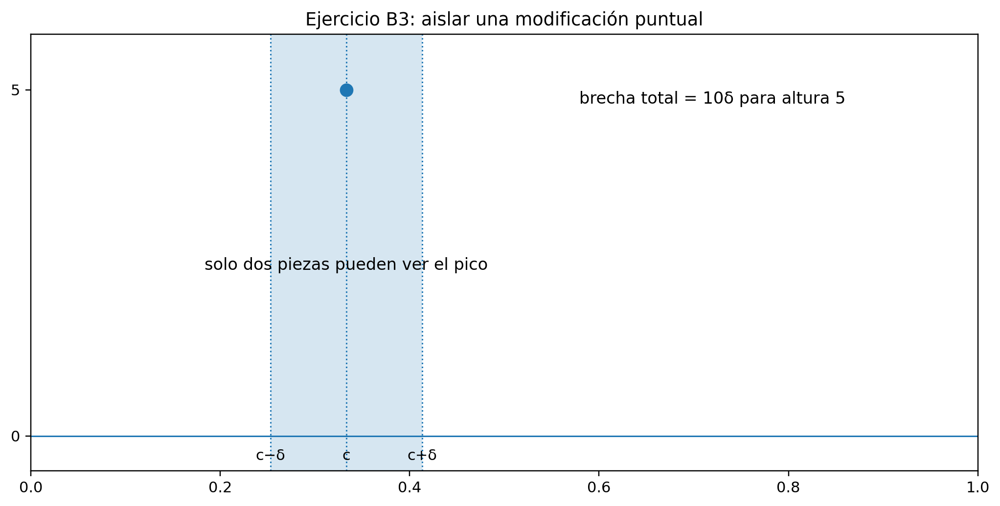
Ejercicio 14.10
Ejercicio B4. Monotonía y variación total. Para \(f(x)=x^3\) en \([0,1]\), usa Teorema 14.5 para demostrar que, para toda partición \(P\),
\[ U(f,P)-L(f,P)\le\|P\|. \]
Dado \(\varepsilon>0\), construye una partición uniforme que certifique la integrabilidad de \(f\).
Ejercicio 14.11
Ejercicio B5. Una sucesión de brechas es suficiente. Sea \(f:[a,b]\to\mathbb R\) acotada. Supón que existe una sucesión de particiones \((P_n)\) tal que
\[ U(f,P_n)-L(f,P_n)\le\frac1n \]
para todo \(n\ge1\).
Demuestra directamente, a partir de Teorema 14.1, que \(f\) es Riemann integrable.
Ejercicio 14.12
Ejercicio B6. Una brecha pequeña pero fija no basta. Para un número \(c>0\) define
\[ d_c(x)= \begin{cases} c,&x\in\mathbb Q,\\ 0,&x\notin\mathbb Q, \end{cases} \qquad 0\le x\le1. \]
Demuestra que toda partición tiene brecha exactamente \(c\). Explica por qué el dato «existe una partición con brecha \(10^{-9}\)» no sería suficiente para probar integrabilidad.
Nivel C — Sumas etiquetadas y criterio por malla
Ejercicio 14.13
Ejercicio C1. Todas las sumas de la identidad son cercanas. Sea \(f(x)=x\) en \([0,1]\) y sea \((P,\xi)\) una partición etiquetada arbitraria.
Demuestra que
\[ \left| R(f;P,\xi)-\frac12 \right| \le \|P\|. \]
Concluye que la condición uniforme de Teorema 14.2 se verifica con, por ejemplo, \(\delta=\varepsilon\).
Ejercicio 14.14
Ejercicio C2. Las mismas particiones, dos límites incompatibles. Sea \(d\) la función racional/irracional de Ejemplo 14.1 y sea \(P_n\) la partición uniforme de \([0,1]\) en \(n\) piezas.
Construye una elección de etiquetas racionales y otra de etiquetas irracionales sobre cada \(P_n\), calcula las dos sumas y explica por qué este comportamiento impide satisfacer Teorema 14.2 para cualquier candidato \(I\).
Como apoyo visual para esta comparación, véase Figura 14.11.
Ejercicio 14.15
Ejercicio C3. Cuánto puede alterar una sola excepción una suma etiquetada. Sean \(f,g:[a,b]\to\mathbb R\) iguales salvo en un punto \(c\), y sea
\[ D=|g(c)-f(c)|. \]
Demuestra que, para toda partición etiquetada \((P,\xi)\),
\[ |R(g;P,\xi)-R(f;P,\xi)| \le 2D\|P\|. \]
Explica el factor \(2\).
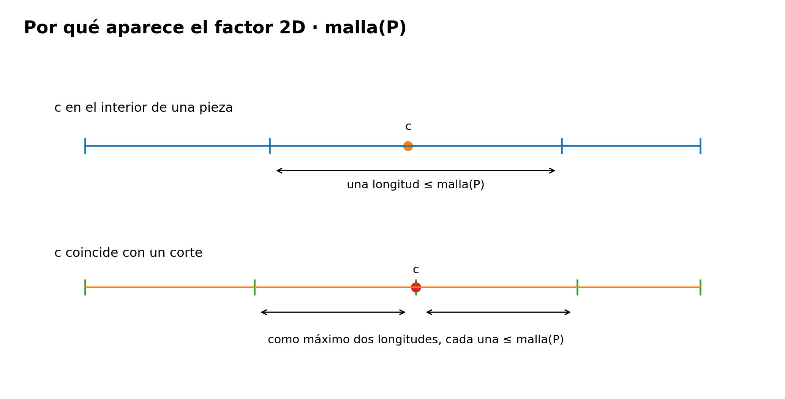
Ejercicio 14.16
Ejercicio C4. El límite uniforme de las sumas etiquetadas es único. Supón que dos números \(I,J\in\mathbb R\) satisfacen la condición 2 de Teorema 14.2 para una misma función acotada \(f\).
Demuestra que \(I=J\) sin usar la definición por integrales inferior y superior.
Ejercicio 14.17
Ejercicio C5. Todas las sumas finas son mutuamente cercanas. Sea \(f\in\mathcal R[a,b]\).
Demuestra que para todo \(\varepsilon>0\) existe \(\delta>0\) tal que, si \((P,\xi)\) y \((Q,\eta)\) son dos particiones etiquetadas cualesquiera con
\[ \|P\|<\delta, \qquad \|Q\|<\delta, \]
entonces
\[ |R(f;P,\xi)-R(f;Q,\eta)|<\varepsilon. \]
Ejercicio 14.18
Ejercicio C6. Auditar una prueba incompleta. Un estudiante afirma:
«He construido particiones etiquetadas \((P_n,\xi^{(n)})\) con \(\|P_n\|\to0\) y \(R(f;P_n,\xi^{(n)})\to7\). Por tanto, \(\int_a^b f=7\).»
Indica con precisión qué falta para que el argumento sea válido y escribe una hipótesis adicional, formulada con cuantificadores, que sí permitiría concluir que \(f\) es integrable con integral \(7\).
Nivel D — Escalonadas, continuas, monótonas y modificaciones finitas
Ejercicio 14.19
Ejercicio D1. Integral elemental e integral de Riemann. Sea
\[ s(x)= \begin{cases} 2,&0\le x<1,\\ -1,&1<x\le3, \end{cases} \]
y asigna a \(s(1)\) cualquier valor real.
- Calcula la integral elemental de \(s\).
- Usa Teorema 14.3 para justificar que el mismo número es su integral de Riemann.
- Explica por qué el valor escogido en \(x=1\) no cambia la respuesta.
Ejercicio 14.20
Ejercicio D2. Dos valores enormes no alteran la integral. Define en \([0,1]\)
\[ g(x)= \begin{cases} 1000,&x=\frac14,\\ -500,&x=\frac34,\\ x,&\text{en otro caso}. \end{cases} \]
Demuestra que \(g\) es Riemann integrable y calcula su integral usando únicamente resultados ya demostrados en C15.
Ejercicio 14.21
Ejercicio D3. Continuidad sin monotonía global. Considera \(f(x)=|x|\) en \([-1,1]\).
- Demuestra que \(f\) es continua y por tanto Riemann integrable.
- Demuestra que \(f\) no es monótona en todo \([-1,1]\).
- Explica por qué Teorema 14.5 no es necesario para este caso.
Ejercicio 14.22
Ejercicio D4. Monótona, discontinua e integrable. Define
\[ h(x)= \begin{cases} 0,&0\le x<\frac12,\\ 1,&\frac12\le x\le1. \end{cases} \]
Demuestra que \(h\) es no decreciente, que es discontinua en \(1/2\) y que es Riemann integrable. Calcula su integral por compatibilidad con la integral elemental.
Ejercicio 14.23
Ejercicio D5. Modificar finitísimos puntos tampoco repara una función no integrable. Sea \(d\) la función racional/irracional de Ejemplo 14.1 y sea \(g:[0,1]\to\mathbb R\) una función que coincide con \(d\) salvo en un conjunto finito.
Demuestra que \(g\) no es Riemann integrable.
Ejercicio 14.24
Ejercicio D6. Dos criterios suficientes que no se contienen mutuamente. Da:
- una función continua en un intervalo cerrado que no sea monótona en todo el intervalo;
- una función monótona Riemann integrable que no sea continua.
Justifica la integrabilidad de cada ejemplo citando el teorema adecuado y explica qué muestra esto sobre §§14.6–14.7.
Nivel E — Álgebra, orden, valor absoluto y productos
Ejercicio 14.25
Ejercicio E1. Una combinación lineal antes de evaluarla. Sean \(f,g\in\mathcal R[a,b]\) y sean \(\alpha,\beta\in\mathbb R\).
Explica por qué \(\alpha f+\beta g\) es integrable antes de escribir su integral y demuestra
\[ \int_a^b(\alpha f+\beta g) = \alpha\int_a^b f + \beta\int_a^b g. \]
Indica qué sería circular en el argumento «la fórmula es lineal, luego \(\alpha f+\beta g\) es integrable».
Ejercicio 14.26
Ejercicio E2. Producto de funciones integrables. En \([-1,1]\) define
\[ f(x)=x, \qquad g(x)=|x|. \]
Demuestra que \(f\), \(g\) y \(fg=x|x|\) son Riemann integrables. No calcules la integral del producto.
Ejercicio 14.27
Ejercicio E3. Máximo y mínimo de dos funciones integrables. Sean \(f,g\in\mathcal R[a,b]\).
Usa las identidades
\[ \max\{f,g\} = \frac{f+g+|f-g|}{2}, \]
y
\[ \min\{f,g\} = \frac{f+g-|f-g|}{2} \]
para demostrar que ambas funciones son Riemann integrables.
Ejercicio 14.28
Ejercicio E4. La desigualdad triangular puede ser estricta. Sea
\[ s(x)= \begin{cases} 2,&0\le x<1,\\ -1,&1\le x\le3. \end{cases} \]
Calcula
\[ \left|\int_0^3s(x)\,dx\right| \qquad\text{y}\qquad \int_0^3|s(x)|\,dx, \]
y verifica Corolario 14.2. Decide si hay igualdad o desigualdad estricta.
Ejercicio 14.29
Ejercicio E5. Partes positiva y negativa. Para \(f\in\mathcal R[a,b]\) define
\[ f^+=\max\{f,0\}, \qquad f^-=\max\{-f,0\}. \]
Demuestra las identidades puntuales
\[ f=f^+-f^-, \qquad |f|=f^++f^-, \]
y deduce que
\[ \int_a^b f = \int_a^b f^+ - \int_a^b f^-. \]
Ejercicio 14.30
Ejercicio E6. Acotar una integral con cotas puntuales. Sea \(f\in\mathcal R[a,b]\) y supón que
\[ m\le f(x)\le M \]
para todo \(x\in[a,b]\).
Demuestra que
\[ m(b-a) \le \int_a^b f(x)\,dx \le M(b-a). \]
Usa solo monotonía de la integral y la integral de funciones constantes.
Nivel F — Aditividad, orientación, modificaciones finitas y contraejemplos
Ejercicio 14.31
Ejercicio F1. Partir una integral en un punto que no era corte original. Sea
\[ s(x)= \begin{cases} 2,&0\le x<1,\\ -1,&1<x\le3, \end{cases} \]
con valor arbitrario en \(x=1\). Calcula
\[ \int_0^3s, \qquad \int_0^{5/2}s, \qquad \int_{5/2}^{3}s, \]
y verifica explícitamente Teorema 14.7.
Ejercicio 14.32
Ejercicio F2. Invertir los límites. Conserva la función \(s\) del ejercicio F1.
Calcula
\[ \int_3^0s(x)\,dx \qquad\text{y}\qquad \int_{5/2}^{0}s(x)\,dx \]
a partir de Definición 14.3, y comprueba que los signos son coherentes con los valores obtenidos en F1.
Ejercicio 14.33
Ejercicio F3. Aditividad orientada en un orden no creciente. Sea \(f\) Riemann integrable en un intervalo que contiene \(0,1,2\).
Demuestra, usando Proposición 14.3, que
\[ \int_2^0 f = \int_2^1 f+\int_1^0 f. \]
Reescribe la identidad usando únicamente integrales con límites crecientes y verifica que ambas formas son equivalentes.
Ejercicio 14.34
Ejercicio F4. Una modificación finita con integral conocida. Define en \([0,1]\)
\[ g(x)= \begin{cases} 10,&x=\frac13,\\ -4,&x=1,\\ x,&\text{en otro caso}. \end{cases} \]
Demuestra que
\[ \int_0^1g(x)\,dx=\frac12. \]
Explica por qué no es necesario calcular sumas de Darboux de \(g\) desde cero.
Ejercicio 14.35
Ejercicio F5. Una mala mitad arruina el intervalo completo. Define
\[ f(x)= \begin{cases} 1,&0\le x\le\frac12\text{ y }x\in\mathbb Q,\\ 0,&0\le x\le\frac12\text{ y }x\notin\mathbb Q,\\ 0,&\frac12<x\le1. \end{cases} \]
Demuestra que \(f\) no es Riemann integrable en \([0,1]\) usando la localidad de Teorema 14.7.
Ejercicio 14.36
Ejercicio F6. Una secuencia de mallas finas no sustituye el criterio de Darboux. Para la función \(d\) de Ejemplo 14.1, toma las particiones uniformes \(P_n\).
Demuestra simultáneamente que
\[ \|P_n\|\to0, \qquad U(d,P_n)-L(d,P_n)=1. \]
Identifica cuál de las dos cantidades es geométrica y cuál incorpora información sobre la oscilación de la función.
Nivel G — Desafíos integradores
Ejercicio 14.37
Ejercicio G1. Tres puertas para la misma integrabilidad. Sea \(f:[a,b]\to\mathbb R\) acotada. Supón que existen particiones \(P_n\) tales que
\[ U(f,P_n)-L(f,P_n)\le\frac1n. \]
- Demuestra que \(f\) es Riemann integrable.
- Si \(I=\int_a^b f\), explica por qué todas las sumas etiquetadas de malla suficientemente pequeña se acercan a \(I\).
- Señala qué resultado justifica cada paso y distingue definición primaria de caracterizaciones equivalentes.
Ejercicio 14.38
Ejercicio G2. Elegir el criterio adecuado. En cada caso decide si la función es Riemann integrable y justifica la respuesta por la ruta más directa disponible en C15:
- \(f_1(x)=x^2\) en \([0,1]\);
- \(f_2(x)=0\) para \(x<1/2\) y \(f_2(x)=1\) para \(x\ge1/2\);
- \(f_3(x)=x\) salvo en \(x=1/3\), donde \(f_3(1/3)=100\);
- \(f_4(x)=1\) en los racionales y \(0\) en los irracionales de \([0,1]\).
No uses FTC, primitivas ni teoría de medida.
Ejercicio 14.39
Ejercicio G3. Construir una función integrable fuera de las dos clases básicas. En \([-1,1]\) define
\[ s(x)= \begin{cases} 0,&x<0,\\ 1,&x\ge0, \end{cases} \qquad h(x)=|x|+s(x). \]
- Demuestra que \(s\) y \(|x|\) son Riemann integrables.
- Deduce que \(h\) es Riemann integrable.
- Demuestra que \(h\) es discontinua en \(0\).
- Demuestra que \(h\) no es monótona en todo \([-1,1]\).
Explica por qué este ejemplo confirma que continuidad y monotonía son criterios suficientes, no caracterizaciones.
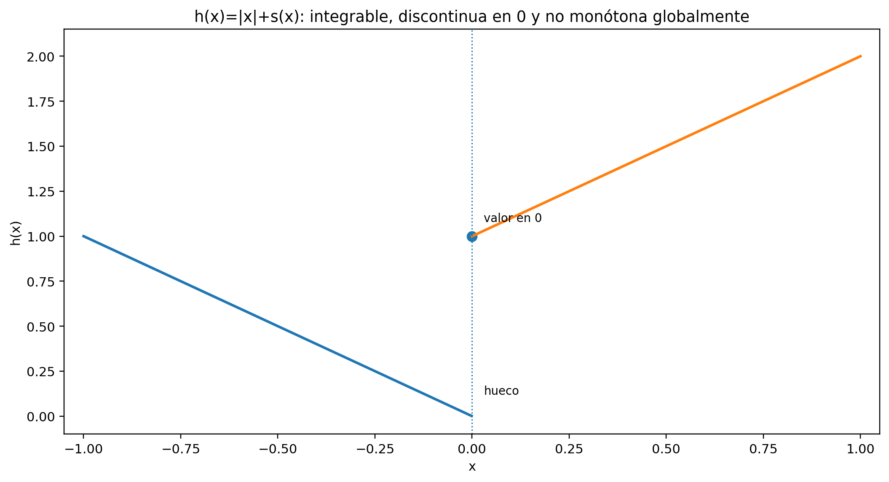
Ejercicio 14.40
Ejercicio G4. Auditoría final de cuatro argumentos. Para cada afirmación, decide si el argumento es válido. Si no lo es, identifica la laguna y formula una reparación correcta usando resultados de C15.
- «\(\|P_n\|\to0\), luego \(f\) es integrable.»
- «Una sucesión particular de sumas etiquetadas converge a \(I\), luego \(\int f=I\).»
- «Como \(\int(f+g)=\int f+\int g\), la suma de dos funciones integrables es integrable.»
- «Una función continua es integrable porque el teorema fundamental del cálculo lo garantiza.»
La reparación debe respetar la arquitectura lógica del capítulo.
Soluciones desarrolladas
Soluciones del nivel A
Solución 14.1.
Solución A1. En toda pieza \([x_{k-1},x_k]\) de una partición \(P\),
\[ \inf f=\sup f=c. \]
Por tanto,
\[ L(f,P) = \sum_{k=1}^n c\,\Delta x_k = c(b-a), \]
y exactamente lo mismo ocurre con la suma superior:
\[ U(f,P)=c(b-a). \]
Así,
\[ \mathcal L(f) = \mathcal U(f) = \{c(b-a)\}. \]
Su supremo y su ínfimo son el mismo número:
\[ \underline{\int_a^b}f = \overline{\int_a^b}f = c(b-a). \]
Por Definición 14.2, \(f\) es Riemann integrable y
\[ \boxed{ \int_a^b c\,dx=c(b-a). } \]
Solución 14.2.
Solución A2. Como \(f(x)=x\) es creciente, en
\[ \left[\frac{k-1}{n},\frac{k}{n}\right] \]
el ínfimo es \((k-1)/n\) y el supremo es \(k/n\). Como todas las piezas tienen longitud \(1/n\),
\[ L(f,P_n) = \frac1{n^2}\sum_{k=1}^n(k-1) = \frac{n(n-1)}{2n^2} = \frac12-\frac1{2n}, \]
mientras
\[ U(f,P_n) = \frac1{n^2}\sum_{k=1}^n k = \frac{n(n+1)}{2n^2} = \frac12+\frac1{2n}. \]
Por Proposición 14.1,
\[ \frac12-\frac1{2n} \le \underline{\int_0^1}f \le \overline{\int_0^1}f \le \frac12+\frac1{2n} \]
para todo \(n\).
Si la integral inferior fuese menor que \(1/2\), la distancia positiva a \(1/2\) sería superada por \(1/(2n)\) para \(n\) suficientemente grande, contradiciendo la desigualdad izquierda. De manera análoga, la integral superior no puede ser mayor que \(1/2\). Por tanto,
\[ \boxed{ \underline{\int_0^1}f = \overline{\int_0^1}f = \frac12. } \]
Solución 14.3.
Solución A3. Todo subintervalo no degenerado contiene racionales e irracionales. En cada pieza de cualquier partición \(P\),
\[ \inf g=-1, \qquad \sup g=3. \]
Como la suma de las anchuras es \(2\),
\[ L(g,P) = -1\cdot2 = -2, \]
y
\[ U(g,P) = 3\cdot2 = 6. \]
Esto vale para toda partición, de modo que
\[ \mathcal L(g)=\{-2\}, \qquad \mathcal U(g)=\{6\}. \]
Por tanto,
\[ \underline{\int_0^2}g=-2, \qquad \overline{\int_0^2}g=6. \]
Como los dos extremos globales no coinciden,
\[ \boxed{g\notin\mathcal R[0,2].} \]
Solución 14.4.
Solución A4. Por el encierro global de Proposición 14.1,
\[ L(f,P) \le \underline{\int_a^b}f \le \overline{\int_a^b}f \le U(f,Q). \]
La hipótesis dice que los extremos de esta cadena son el mismo número \(I\). Así,
\[ I \le \underline{\int_a^b}f \le \overline{\int_a^b}f \le I. \]
Luego necesariamente
\[ \underline{\int_a^b}f = \overline{\int_a^b}f = I. \]
Por Definición 14.2,
\[ \boxed{ f\in\mathcal R[a,b], \qquad \int_a^b f=I. } \]
No fue necesario comparar directamente \(P\) y \(Q\): Proposición 14.1 ya incorpora la compatibilidad global entre particiones arbitrarias.
Solución 14.5.
Solución A5. Como \(f\) es integrable,
\[ I = \sup_{P}L(f,P) = \inf_{P}U(f,P). \]
Sea \(\varepsilon>0\). Si ninguna suma inferior superase \(I-\varepsilon\), entonces \(I-\varepsilon\) sería una cota superior de todas las sumas inferiores, contradiciendo que \(I\) es su supremo. Por tanto existe \(P_-\) con
\[ L(f,P_-)>I-\varepsilon. \]
Además, toda suma inferior está por debajo de \(I\), de modo que
\[ I-\varepsilon < L(f,P_-) \le I. \]
Análogamente, si ninguna suma superior fuese menor que \(I+\varepsilon\), ese número sería una cota inferior mayor que el ínfimo \(I\). Existe entonces \(P_+\) tal que
\[ I \le U(f,P_+) < I+\varepsilon. \]
Las propiedades de supremo e ínfimo producen inicialmente dos particiones independientes; nada obliga a que coincidan. Cuando se necesita una sola partición que herede ambas aproximaciones se pasa al refinamiento común, como en la prueba de Teorema 14.1.
Solución 14.6.
Solución A6. Fijemos una partición \(P\). En cada subintervalo \(I_k\),
\[ \inf_{I_k} f \le \inf_{I_k} g, \]
porque \(f\le g\) punto a punto. Multiplicando por \(\Delta x_k>0\) y sumando,
\[ L(f,P)\le L(g,P). \]
Esto vale para toda partición \(P\). Por tanto,
\[ \sup_P L(f,P) \le \sup_P L(g,P), \]
es decir,
\[ \boxed{ \underline{\int_a^b}f \le \underline{\int_a^b}g. } \]
De manera análoga,
\[ \sup_{I_k} f \le \sup_{I_k} g, \]
de donde
\[ U(f,P)\le U(g,P) \]
para toda \(P\). Tomando ínfimos,
\[ \boxed{ \overline{\int_a^b}f \le \overline{\int_a^b}g. } \]
La argumentación usa solamente orden y las definiciones globales; no presupone integrabilidad.
Soluciones del nivel B
Solución 14.7.
Solución B1. Dado \(\varepsilon>0\), por la propiedad arquimediana existe un entero
\[ n>\frac1\varepsilon. \]
Por ejemplo, puede elegirse cualquier entero mayor que \(1/\varepsilon\). Entonces
\[ U(f,P_n)-L(f,P_n) = \frac1n < \varepsilon. \]
Como esto puede hacerse para toda tolerancia positiva, Teorema 14.1 implica
\[ \boxed{f\in\mathcal R[0,1].} \]
El argumento certifica existencia de la integral, pero no calcula su valor.
Solución 14.8.
Solución B2. Sea
\[ P=\{-1=x_0<x_1<\cdots<x_n=1\}. \]
En una pieza \(I_k=[x_{k-1},x_k]\), para cualesquiera \(u,v\in I_k\),
\[ \bigl||u|-|v|\bigr| \le |u-v| \le \Delta x_k \le \|P\|. \]
Por tanto la oscilación local satisface
\[ \omega_k\le\|P\|. \]
Usando la identidad de la brecha,
\[ \begin{aligned} U(f,P)-L(f,P) &= \sum_{k=1}^n\omega_k\Delta x_k\\ &\le \|P\|\sum_{k=1}^n\Delta x_k\\ &= 2\|P\|. \end{aligned} \]
Dado \(\varepsilon>0\), basta elegir una partición con
\[ \|P\|<\frac{\varepsilon}{2}, \]
por ejemplo una partición uniforme suficientemente fina. Entonces la brecha es menor que \(\varepsilon\), y Teorema 14.1 da
\[ \boxed{|x|\in\mathcal R[-1,1].} \]
Solución 14.9.
Solución B3. Fuera de las dos piezas adyacentes a \(1/3\), la función es constantemente cero, de modo que la oscilación es nula.
En
\[ \left[\frac13-\delta,\frac13\right] \quad\text{y}\quad \left[\frac13,\frac13+\delta\right] \]
aparecen los valores \(0\) y \(5\), así que la oscilación es \(5\) en cada una. Ambas tienen longitud \(\delta\). Por tanto,
\[ U(s,P_\delta)-L(s,P_\delta) = 5\delta+5\delta = 10\delta. \]
Dado \(\varepsilon>0\), elige
\[ 0<\delta< \min\left\{ \frac13,\frac{\varepsilon}{10} \right\}. \]
Entonces
\[ U(s,P_\delta)-L(s,P_\delta)<\varepsilon. \]
Por Teorema 14.1,
\[ \boxed{s\in\mathcal R[0,1].} \]
El cálculo cuantifica la idea de que una amplitud vertical fija puede confinarse en una anchura horizontal arbitrariamente pequeña.
Solución 14.10.
Solución B4. \(f(x)=x^3\) es creciente en \([0,1]\). Por Teorema 14.5, toda partición \(P\) satisface
\[ U(f,P)-L(f,P) \le \|P\|\,|f(1)-f(0)|. \]
Como
\[ |f(1)-f(0)|=1, \]
obtenemos
\[ \boxed{ U(f,P)-L(f,P)\le\|P\|. } \]
Dado \(\varepsilon>0\), elige un entero \(n>1/\varepsilon\) y toma la partición uniforme en \(n\) piezas. Su malla es \(1/n<\varepsilon\), por lo que
\[ U(f,P_n)-L(f,P_n)<\varepsilon. \]
El criterio de Darboux vuelve a confirmar la integrabilidad.
Solución 14.11.
Solución B5. Sea \(\varepsilon>0\). Elige un entero
\[ n>\frac1\varepsilon. \]
Entonces
\[ U(f,P_n)-L(f,P_n) \le \frac1n < \varepsilon. \]
Así, para toda tolerancia positiva existe una partición cuya brecha es menor que esa tolerancia. Esta es exactamente la condición de Teorema 14.1. Por tanto,
\[ \boxed{f\in\mathcal R[a,b].} \]
Solución 14.12.
Solución B6. En cada subintervalo no degenerado hay racionales e irracionales. Por tanto, para cualquier partición \(P\),
\[ \inf d_c=0, \qquad \sup d_c=c \]
en cada pieza. Como la suma de las anchuras es \(1\),
\[ L(d_c,P)=0, \qquad U(d_c,P)=c. \]
Luego
\[ \boxed{ U(d_c,P)-L(d_c,P)=c } \]
para toda partición.
Si \(c=10^{-9}\), una brecha de ese tamaño es numéricamente pequeña, pero el criterio exige responder a toda tolerancia. Tomando, por ejemplo,
\[ \varepsilon=\frac{c}{2}, \]
ninguna partición satisface
\[ U-L<\varepsilon. \]
Por eso una brecha positiva fija, aunque sea diminuta, no prueba integrabilidad.
Soluciones del nivel C
Solución 14.13.
Solución C1. Ya sabemos por Ejemplo 14.2 que
\[ \int_0^1x\,dx=\frac12. \]
Para una partición arbitraria \(P\), la función identidad es creciente y Teorema 14.5 da
\[ U(f,P)-L(f,P) \le \|P\|\,|f(1)-f(0)| = \|P\|. \]
Tanto la suma etiquetada como la integral están encerradas entre \(L(f,P)\) y \(U(f,P)\). Por tanto,
\[ \left| R(f;P,\xi)-\frac12 \right| \le U(f,P)-L(f,P) \le \|P\|. \]
Dado \(\varepsilon>0\), si
\[ \|P\|<\delta:=\varepsilon, \]
entonces
\[ \left| R(f;P,\xi)-\frac12 \right| <\varepsilon \]
para toda elección de etiquetas. Esto verifica la condición uniforme de Teorema 14.2.
Solución 14.14.
Solución C2. Cada pieza de \(P_n\) es un intervalo no degenerado y contiene racionales e irracionales.
Si elegimos una etiqueta racional en cada pieza, entonces cada valor de \(d\) es \(1\), de modo que
\[ R(d;P_n,\xi^{(n)}) = \sum_{k=1}^n1\cdot\frac1n = 1. \]
Si elegimos etiquetas irracionales,
\[ R(d;P_n,\eta^{(n)}) = \sum_{k=1}^n0\cdot\frac1n = 0. \]
Las dos familias usan las mismas particiones, cuyas mallas tienden a cero, pero sus sumas permanecen separadas por \(1\).
Si existiese un número \(I\) que satisficiera Teorema 14.2, tomando por ejemplo \(\varepsilon=1/3\) todas las sumas de malla suficientemente pequeña deberían quedar a distancia menor que \(1/3\) de \(I\). Dos de ellas no podrían diferir en \(1\). Contradicción. Por tanto no existe tal \(I\).
Solución 14.15.
Solución C3. Las sumas solo pueden diferir en aquellas piezas cuya etiqueta sea exactamente \(c\).
Si \(c\) está en el interior de una pieza, puede ser etiqueta únicamente de esa pieza. Si \(c\) es un punto de corte interior, puede pertenecer a las dos piezas adyacentes y, por tanto, puede aparecer como etiqueta en ambas. En cualquier caso intervienen a lo sumo dos subintervalos.
Cada uno tiene longitud a lo sumo \(\|P\|\). En una pieza etiquetada en \(c\), la diferencia de contribuciones tiene valor absoluto
\[ D\,\Delta x_k. \]
Por la desigualdad triangular,
\[ |R(g;P,\xi)-R(f;P,\xi)| \le D(\Delta x_{k_1}+\Delta x_{k_2}) \le 2D\|P\|. \]
El factor \(2\) aparece porque un punto de corte puede ser utilizado como etiqueta de las dos piezas que se encuentran en él.
Solución 14.16.
Solución C4. Sea \(\varepsilon>0\). Aplicando la condición uniforme a \(I\) con tolerancia \(\varepsilon/2\), existe \(\delta_I>0\) tal que toda suma etiquetada con malla menor que \(\delta_I\) satisface
\[ |R-I|<\frac{\varepsilon}{2}. \]
De manera análoga existe \(\delta_J>0\) con
\[ |R-J|<\frac{\varepsilon}{2} \]
para toda suma de malla menor que \(\delta_J\).
Elige cualquier partición etiquetada con malla menor que
\[ \min\{\delta_I,\delta_J\}. \]
Entonces
\[ |I-J| \le |I-R|+|R-J| < \varepsilon. \]
Como esto vale para todo \(\varepsilon>0\), necesariamente
\[ \boxed{I=J.} \]
La unicidad se obtiene únicamente de la propiedad uniforme y la desigualdad triangular.
Solución 14.17.
Solución C5. Sea
\[ I=\int_a^b f. \]
Aplicamos Teorema 14.2 con tolerancia \(\varepsilon/2\). Existe \(\delta>0\) tal que, para toda partición etiquetada de malla menor que \(\delta\),
\[ |R(f;P,\xi)-I|<\frac{\varepsilon}{2}. \]
Si \((P,\xi)\) y \((Q,\eta)\) satisfacen ambas condiciones de malla, entonces
\[ \begin{aligned} |R(f;P,\xi)-R(f;Q,\eta)| &\le |R(f;P,\xi)-I| + |I-R(f;Q,\eta)|\\ &< \frac{\varepsilon}{2} + \frac{\varepsilon}{2}\\ &= \varepsilon. \end{aligned} \]
Así, la integrabilidad hace que todas las sumas suficientemente finas sean mutuamente cercanas, aunque provengan de particiones y etiquetas diferentes.
Solución 14.18.
Solución C6. El argumento solo controla una familia escogida:
\[ (P_n,\xi^{(n)}). \]
No dice nada sobre otras particiones de malla comparable ni sobre otras etiquetas. La función racional/irracional muestra que una familia particular puede converger aunque la función no sea integrable.
Una hipótesis suficiente es la condición uniforme completa:
\[ \forall\varepsilon>0\ \exists\delta>0\ \forall(P,\xi): \|P\|<\delta \Longrightarrow |R(f;P,\xi)-7|<\varepsilon. \]
Si esta propiedad se cumple, Teorema 14.2 permite concluir
\[ \boxed{ f\in\mathcal R[a,b], \qquad \int_a^b f=7. } \]
Lo que faltaba era reemplazar el control de una secuencia por un control uniforme sobre todas las particiones etiquetadas suficientemente finas.
Soluciones del nivel D
Solución 14.19.
Solución D1. La partición natural
\[ P=\{0,1,3\} \]
representa a \(s\). Las alturas sobre los intervalos abiertos son \(2\) y \(-1\), con anchuras \(1\) y \(2\). Por tanto, la integral elemental es
\[ 2(1)+(-1)(2)=0. \]
Teorema 14.3 afirma que toda escalonada es Riemann integrable y que ambas construcciones coinciden. Así,
\[ \boxed{ \int_0^3s(x)\,dx=0. } \]
El valor \(s(1)\) se encuentra en un punto de corte. Cambiarlo no modifica la integral elemental, y Corolario 14.1 confirma además que una modificación puntual tampoco cambia la integral de Riemann.
Solución 14.20.
Solución D2. La función identidad
\[ f(x)=x \]
es Riemann integrable en \([0,1]\) y Ejemplo 14.2 da
\[ \int_0^1x\,dx=\frac12. \]
\(g\) difiere de \(f\) únicamente en el conjunto finito
\[ \left\{\frac14,\frac34\right\}. \]
Por Corolario 14.1, las dos funciones tienen la misma integrabilidad y el mismo valor integral. Por tanto,
\[ \boxed{ g\in\mathcal R[0,1], \qquad \int_0^1g(x)\,dx=\frac12. } \]
La magnitud de las dos modificaciones puntuales no altera la conclusión; lo decisivo es que son finitísimas.
Solución 14.21.
Solución D3. La función valor absoluto es continua en \(\mathbb R\) porque
\[ \bigl||x|-|y|\bigr|\le|x-y|. \]
En particular es continua en el intervalo compacto \([-1,1]\). Por Teorema 14.4,
\[ \boxed{|x|\in\mathcal R[-1,1].} \]
No es monótona en todo el intervalo: por ejemplo,
\[ -1<0<1, \]
pero
\[ |-1|=1>|0|=0<|1|=1. \]
En \([-1,0]\) decrece y en \([0,1]\) crece. Por tanto Teorema 14.5 no proporciona una única aplicación global sobre \([-1,1]\); tampoco hace falta, porque la continuidad ya basta.
Solución 14.22.
Solución D4. Si \(x<y\), los valores posibles siguen el orden \(0\le1\), así que \(h\) es no decreciente.
En \(x=1/2\),
\[ h\left(\frac12\right)=1, \]
mientras que por la izquierda los valores son constantemente \(0\). Por tanto la función es discontinua en ese punto.
Sin embargo, por Teorema 14.5 toda función monótona en un intervalo cerrado es Riemann integrable.
Además \(h\) es escalonada: tiene altura \(0\) en \((0,1/2)\) y altura \(1\) en \((1/2,1)\). Su integral elemental es
\[ 0\left(\frac12\right) + 1\left(\frac12\right) = \frac12. \]
Por Teorema 14.3,
\[ \boxed{ \int_0^1h(x)\,dx=\frac12. } \]
Solución 14.23.
Solución D5. Ejemplo 14.1 demuestra que
\[ d\notin\mathcal R[0,1]. \]
\(g\) coincide con \(d\) salvo en un conjunto finito. Corolario 14.1 establece la equivalencia
\[ d\in\mathcal R[0,1] \iff g\in\mathcal R[0,1]. \]
Como la afirmación de la izquierda es falsa, también lo es la de la derecha:
\[ \boxed{g\notin\mathcal R[0,1].} \]
La invariancia ante modificaciones finitas funciona en ambas direcciones: no solo preserva la integrabilidad cuando existe, sino también la no integrabilidad dentro de una clase de equivalencia finita.
Solución 14.24.
Solución D6. Para el primer ejemplo podemos tomar
\[ f(x)=|x| \qquad (-1\le x\le1). \]
Es continua, luego integrable por Teorema 14.4, pero no es monótona en todo \([-1,1]\).
Para el segundo podemos tomar la función escalón
\[ h(x)= \begin{cases} 0,&0\le x<1/2,\\ 1,&1/2\le x\le1. \end{cases} \]
Es no decreciente, luego integrable por Teorema 14.5, pero es discontinua en \(1/2\).
Así, las clases «continua» y «monótona» proporcionan rutas suficientes distintas. Ninguna de las dos contiene a la otra dentro de las funciones del capítulo.
Soluciones del nivel E
Solución 14.25.
Solución E1. El orden lógico correcto está contenido en Teorema 14.6.
Primero, el teorema establece que si
\[ f,g\in\mathcal R[a,b], \]
entonces para cualesquiera escalares \(\alpha,\beta\) también
\[ \alpha f+\beta g\in\mathcal R[a,b]. \]
Solo después de haber garantizado que esa integral existe podemos escribir
\[ \boxed{ \int_a^b(\alpha f+\beta g) = \alpha\int_a^b f + \beta\int_a^b g. } \]
El argumento «la fórmula es lineal, luego la función es integrable» es circular porque el miembro izquierdo presupone que la integral de \(\alpha f+\beta g\) ya está definida.
Solución 14.26.
Solución E2. \(f(x)=x\) es continua, por lo que
\[ f\in\mathcal R[-1,1] \]
por Teorema 14.4.
\(g(x)=|x|\) también es continua, así que
\[ g\in\mathcal R[-1,1]. \]
Proposición 14.2 demuestra que el producto de dos funciones Riemann integrables es Riemann integrable. Por tanto,
\[ \boxed{ x|x|\in\mathcal R[-1,1]. } \]
No es necesario disponer todavía de una técnica para evaluar su integral.
Solución 14.27.
Solución E3. Como \(f,g\) son integrables, Teorema 14.6 implica que
\[ f-g \]
es integrable. Por Proposición 14.2 también lo es
\[ |f-g|. \]
Otra aplicación de la linealidad muestra que
\[ f+g+|f-g| \]
y
\[ f+g-|f-g| \]
son integrables. Multiplicar por \(1/2\) preserva la integrabilidad.
Usando las identidades puntuales dadas,
\[ \boxed{ \max\{f,g\},\ \min\{f,g\}\in\mathcal R[a,b]. } \]
Solución 14.28.
Solución E4. La integral de \(s\) es
\[ \int_0^3s = 2(1)+(-1)(2) = 0. \]
Luego
\[ \left|\int_0^3s\right|=0. \]
En cambio,
\[ |s(x)| = \begin{cases} 2,&0\le x<1,\\ 1,&1\le x\le3, \end{cases} \]
salvo el valor de corte irrelevante. Por tanto,
\[ \int_0^3|s| = 2(1)+1(2) = 4. \]
Así,
\[ \boxed{ \left|\int_0^3s\right| = 0 < 4 = \int_0^3|s|. } \]
La desigualdad de Corolario 14.2 es estricta porque las contribuciones positiva y negativa se cancelan en \(\int s\), pero no en \(\int|s|\).
Solución 14.29.
Solución E5. Si \(f(x)\ge0\), entonces
\[ f^+(x)=f(x), \qquad f^-(x)=0. \]
Si \(f(x)<0\), entonces
\[ f^+(x)=0, \qquad f^-(x)=-f(x). \]
En ambos casos,
\[ f=f^+-f^-. \]
De manera análoga,
\[ |f|=f^++f^-. \]
Proposición 14.2 garantiza que \(f^+\) y \(f^-\) son integrables. Aplicando linealidad a la primera identidad,
\[ \boxed{ \int_a^b f = \int_a^b f^+ - \int_a^b f^-. } \]
La segunda identidad también produce
\[ \int_a^b|f| = \int_a^b f^+ + \int_a^b f^-. \]
Solución 14.30.
Solución E6. Las funciones constantes
\[ x\mapsto m \qquad\text{y}\qquad x\mapsto M \]
son Riemann integrables, con integrales
\[ m(b-a) \qquad\text{y}\qquad M(b-a). \]
La hipótesis puntual es
\[ m\le f\le M. \]
Por la monotonía de la integral en Teorema 14.6,
\[ \int_a^b m\,dx \le \int_a^b f(x)\,dx \le \int_a^b M\,dx. \]
Sustituyendo los valores de las integrales constantes,
\[ \boxed{ m(b-a) \le \int_a^b f \le M(b-a). } \]
Soluciones del nivel F
Solución 14.31.
Solución F1. La integral total es
\[ \int_0^3s = 2(1)+(-1)(2) = 0. \]
En \([0,5/2]\) aparece la primera franja completa y una longitud \(3/2\) de la segunda:
\[ \int_0^{5/2}s = 2(1)+(-1)\left(\frac32\right) = \frac12. \]
En \([5/2,3]\) solo queda una longitud \(1/2\) con altura \(-1\):
\[ \int_{5/2}^{3}s = -\frac12. \]
Por tanto,
\[ \boxed{ \int_0^3s = 0 = \frac12-\frac12 = \int_0^{5/2}s + \int_{5/2}^{3}s. } \]
Esto verifica concretamente la aditividad de Teorema 14.7, aunque \(5/2\) no fuese un corte de la representación original.
Solución 14.32.
Solución F2. Por Definición 14.3,
\[ \int_3^0s = -\int_0^3s = -0 = 0. \]
También,
\[ \int_{5/2}^{0}s = -\int_0^{5/2}s = -\frac12. \]
Así,
\[ \boxed{ \int_3^0s=0, \qquad \int_{5/2}^{0}s=-\frac12. } \]
La inversión de límites no cambia la magnitud del valor asociado al mismo tramo; cambia únicamente su signo.
Solución 14.33.
Solución F3. Proposición 14.3 vale para tres puntos en cualquier orden. Tomando
\[ r=2, \qquad s=1, \qquad t=0, \]
obtenemos directamente
\[ \boxed{ \int_2^0f = \int_2^1f+\int_1^0f. } \]
Usando la convención de orientación,
\[ \int_2^0f=-\int_0^2f, \qquad \int_2^1f=-\int_1^2f, \qquad \int_1^0f=-\int_0^1f. \]
Multiplicando la identidad por \(-1\) queda
\[ \int_0^2f = \int_0^1f+\int_1^2f, \]
que es la forma habitual con límites crecientes. Las dos expresiones son exactamente equivalentes.
Solución 14.34.
Solución F4. La función identidad
\[ f(x)=x \]
es Riemann integrable en \([0,1]\) y
\[ \int_0^1f(x)\,dx=\frac12. \]
\(g\) difiere de \(f\) únicamente en los puntos
\[ \frac13 \qquad\text{y}\qquad 1. \]
Por Corolario 14.1, las modificaciones finitas preservan tanto integrabilidad como valor integral. Así,
\[ \boxed{ \int_0^1g(x)\,dx=\frac12. } \]
No hace falta recomenzar con sumas inferiores y superiores porque el corolario ya encapsula exactamente el efecto de esas excepciones.
Solución 14.35.
Solución F5. La restricción de \(f\) al subintervalo \([0,1/2]\) es la función racional/irracional con valores \(1\) y \(0\) sobre ese intervalo.
En toda partición de \([0,1/2]\), cada pieza contiene racionales e irracionales. Por tanto,
\[ L=0, \qquad U=\frac12, \]
para toda partición, y la restricción no es Riemann integrable.
Teorema 14.7 afirma que si \(f\) fuese integrable en \([0,1]\), entonces sus restricciones a \([0,1/2]\) y \([1/2,1]\) también serían integrables. La primera no lo es. Por contraposición,
\[ \boxed{ f\notin\mathcal R[0,1]. } \]
Solución 14.36.
Solución F6. La partición uniforme en \(n\) piezas tiene malla
\[ \|P_n\|=\frac1n\longrightarrow0. \]
Pero en cada pieza aparecen racionales e irracionales, de modo que
\[ \inf d=0, \qquad \sup d=1. \]
Por tanto,
\[ L(d,P_n)=0, \qquad U(d,P_n)=1, \]
y
\[ \boxed{ U(d,P_n)-L(d,P_n)=1 } \]
para todo \(n\).
La malla es una propiedad geométrica de la partición: mide la longitud de su pieza más grande. La brecha incorpora además la oscilación de la función dentro de las piezas. Hacer fina la geometría no obliga a que una función arbitraria oscile menos.
Soluciones del nivel G
Solución 14.37.
Solución G1. Para la primera parte, sea \(\varepsilon>0\). Elige un entero
\[ n>\frac1\varepsilon. \]
Entonces
\[ U(f,P_n)-L(f,P_n) \le \frac1n < \varepsilon. \]
Por Teorema 14.1,
\[ f\in\mathcal R[a,b]. \]
Esta conclusión utiliza la caracterización de Darboux, cuya definición primaria subyacente sigue siendo Definición 14.2.
Escribamos
\[ I=\int_a^b f. \]
Como \(f\) ya es integrable, Teorema 14.2 garantiza que para todo \(\varepsilon>0\) existe \(\delta>0\) tal que
\[ \|P\|<\delta \Longrightarrow |R(f;P,\xi)-I|<\varepsilon \]
para toda elección de partición y etiquetas.
La cadena lógica es
\[ \boxed{ \text{brechas }1/n\to0 \overset{\text{Darboux}}{\Longrightarrow} \text{integrabilidad} \overset{\text{sumas etiquetadas}}{\Longrightarrow} \text{control uniforme de sumas etiquetadas}. } \]
La definición primaria es la coincidencia de integrales inferior y superior; los otros dos pasos son teoremas equivalentes o consecuencias equivalentes ya demostradas.
Solución 14.38.
Solución G2.
\(f_1(x)=x^2\) es continua en \([0,1]\). Por Teorema 14.4 es Riemann integrable. También podría usarse la brecha explícita de Ejemplo 14.3.
\(f_2\) es no decreciente en \([0,1]\), aunque tiene un salto en \(1/2\). Por Teorema 14.5 es Riemann integrable; además es escalonada.
\(f_3\) difiere de la identidad solo en el punto \(1/3\). La identidad es integrable, de modo que Corolario 14.1 implica que \(f_3\) es integrable con el mismo valor.
\(f_4\) es la función de Ejemplo 14.1. Para toda partición,
\[ L(f_4,P)=0, \qquad U(f_4,P)=1. \]
Por tanto no es Riemann integrable.
Cada caso se resuelve con una herramienta interna de C15; no hace falta relacionar la integral con primitivas ni introducir teoría de medida.
Solución 14.39.
Solución G3. \(s\) es una función escalonada, por lo que Teorema 14.3 da
\[ s\in\mathcal R[-1,1]. \]
\(|x|\) es continua en \([-1,1]\), así que Teorema 14.4 da
\[ |x|\in\mathcal R[-1,1]. \]
Por linealidad y cierre de Teorema 14.6,
\[ \boxed{ h=|x|+s\in\mathcal R[-1,1]. } \]
En \(0\),
\[ h(0)=1, \]
mientras que si \(x\to0^-\),
\[ h(x)=|x|\to0. \]
Luego \(h\) es discontinua en \(0\).
Tampoco es monótona en todo el intervalo. Por ejemplo,
\[ -1<-\frac12<0, \]
pero
\[ h(-1)=1, \qquad h\left(-\frac12\right)=\frac12, \qquad h(0)=1. \]
Primero disminuye y luego aumenta. Así, \(h\) no es monótona globalmente.
La integrabilidad se obtuvo por la estructura algebraica de \(\mathcal R[-1,1]\), mostrando de nuevo que continuidad y monotonía son rutas suficientes, no descripciones exhaustivas de la clase.
Solución 14.40.
Solución G4.
1. «\(\|P_n\|\to0\), luego \(f\) es integrable.» Es inválido. La malla por sí sola no controla la oscilación. Ejemplo 14.1 con particiones uniformes da un contraejemplo. Una reparación correcta es demostrar además
\[ U(f,P_n)-L(f,P_n)\to0, \]
y aplicar Teorema 14.1.
2. «Una sucesión particular de sumas etiquetadas converge a \(I\), luego \(\int f=I\).» También es inválido. Solo se han controlado esas elecciones. La reparación es probar
\[ \forall\varepsilon>0\ \exists\delta>0\ \forall(P,\xi): \|P\|<\delta \Longrightarrow |R(f;P,\xi)-I|<\varepsilon, \]
y usar Teorema 14.2.
3. «Como \(\int(f+g)=\int f+\int g\), la suma de dos funciones integrables es integrable.» El orden lógico es circular: el miembro izquierdo presupone que \(f+g\) ya tiene integral. Teorema 14.6 demuestra primero el cierre de \(\mathcal R[a,b]\) bajo sumas y luego la fórmula de linealidad.
4. «Una función continua es integrable porque el teorema fundamental del cálculo lo garantiza.» Aunque la conclusión sea verdadera, esa ruta viola la arquitectura del capítulo y usaría un resultado posterior. La reparación canónica es Teorema 14.4: continuidad en \([a,b]\) implica continuidad uniforme; las oscilaciones locales se hacen pequeñas, la brecha de Darboux se hace arbitrariamente pequeña y Teorema 14.1 concluye integrabilidad.
En los cuatro casos la corrección consiste en respetar la dirección lógica de las dependencias construidas dentro de C15.